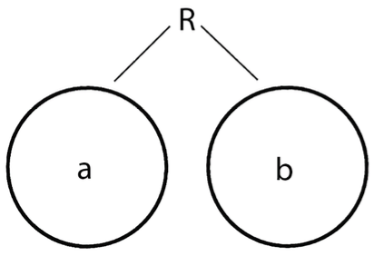
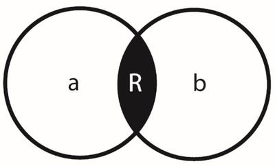

Japanese Philosophy
Japanese philosophers have historically interacted intensively with a multitude of philosophies outside their native boundaries—most prominently Chinese, Indian, Korean, and Western. So they have benefited from a rich trove of ideas and theories on which to draw in developing their own distinctive philosophical perspectives. As a result Japanese philosophers have always been acutely attuned to the intimate relations among culture, ways of thinking, and philosophical world views. An island chain twice as distant from its continental neighbors as Britain is to its own, Japan escaped successful foreign invasion until 1945. Accordingly, it largely negotiated its own cultural, including philosophical, development without an alien power forcibly imposing on the archipelago its own religious world view or philosophical theories. The early twentieth-century academic philosophers in Japan, for example, were so well educated in the world’s texts and theories, many in the original languages, that they were among the most internationally informed philosophers of their time.
Without foreign ideas being coerced on them, Japanese thinkers had the luxury of alternatives outside the binary of simple wholehearted acceptance or utter rejection. New theories from abroad could be tried and, if need be, experimentally modified before making a final decision about endorsement. Sometimes a foreign philosophy might be seen as supplying raw material to be fashioned to serve ongoing native philosophical enterprises. In other cases a new philosophy might be imported whole cloth to either supplement or supplant a home system of thought. Because of those circumstances, Japanese philosophers acquired skill in analyzing foreign ideas by examining the cultural assumptions behind them to determine their potential implications if they were to be adopted into their own culture.
Against that backdrop, this article explains Japanese philosophy in five sections. Section 1 considers how Japanese have traditionally understood philosophy to be a Way (michi) of engaging reality rather than a detached method for studying it. The next section lists some patterns of analysis that are hallmarks of that Way of Japanese philosophizing. Section 3 identifies five distinguishable traditions having had a major impact on Japanese philosophy, explaining a few central ideas from each. Section 4 surveys how those five traditions have evolved and interacted over four major periods of Japanese history from ancient times to the present. Section 5 concludes with a few themes given special emphasis in Japanese philosophy that might be provocative to philosophy at large.
- 1. Philosophy as Engaged Knowing
- 2. Hallmarks of Japanese Philosophical Analysis
- 3. Five Fountainheads of Japanese Philosophy
- 4. Historical Periods of Philosophical Development and Interaction
- 5. Possible Contributions to Philosophy at Large
- Bibliography
- Academic Tools
- Other Internet Resources
- Related Entries
1. Philosophy as Engaged Knowing
Most Japanese philosophers have assumed the relation between knower and known is an interactive conjunction between the two rather than a bridge spanning the disjunction between what is in the knower’s mind and the known which stands outside it. The Japanese philosopher is thus more likely to be viewed as a person who tries to fathom reality by working within it rather than one who tries to understand it by standing apart from it. In other words, the Japanese philosopher’s project more often involves personal engagement than impersonal detachment. The difference in emphasis between traditional Japanese philosophy and modern Western philosophy became clear to the Japanese when the latter was first introduced into their country in full force in the mid-nineteenth century. A crucial issue for the intellectual leadership of the time was how to identify in Japanese what the Westerners called philosophy. Wanting to assimilate Western philosophy along with other aspects of Western culture, the architects of Japanese modernization wanted to give the field its own Japanese name, rather than treating it as a foreign term pronounced phonetically.
To capture the philosophical sense of wisdom (-sophy), they picked a likely candidate from the classical East Asian tradition, namely, tetsu. More provocative, though, was their choice for the other part of the neologism, namely, gaku. That word also had a classical pedigree: it signified learning, especially in the sense of modeling oneself after a textual or human model (that is, a master text or a personal master). Probably more significantly, though, the term gaku at the time was prominent in neologisms for disciplines in the newly established Western-style universities, functioning as an equivalent for the German Wissenschaft. Hence, it rendered the -ology suffix of fields like biology or geology as well as the humanistic “sciences” (Wissenschaften) like history or literary studies. By this protocol of nomenclature, the Western discipline of philosophy came to be called in Japan by the compound word tetsugaku and academic philosophers were (and still are) called tetsugakusha, that is, “ones who partake in the Wissenschaft of wisdom.”
The salient point is that the label chosen was not a more traditional term like tetsujin, “wise people.” A word like tetsujin might have more closely approximated the original Greek meaning of the philosopher as a “lover of wisdom” than does tetsugakusha, which suggests something more like a “scholar of wisdomology.” As a result, we might say tetsujin better refers to the premodern Japanese sense of the philosopher, that is, a sage who has mastery in one of the traditional Ways (dō or michi) such as the Way of the buddhas, the Way of the Confucian scholarly sages, the Way of the (Shintō) kami, or even one of the Ways of the traditional arts such as calligraphy, tea ceremony, pottery, painting, flower arranging, or any of the various martial arts. (Traditional Japan used a variety of terms for the sagely master; for convenience in this article tetsujin will appear throughout.)
In effect, by creating the new term tetsugakusha instead of drawing on an already existing term from their own tradition, the Japanese were drawing a distinction between two species of understanding and two forms of philosophizing. One species of knowers aspires to a scholarly (“scientific”) detachment that mutes personal affect with the aim of reflecting external affairs as they exist independently of human ideation. That kind of understanding is the goal of the Wissenschaften—the empirical sciences, literary criticism, studies of history, and social sciences—that define most departments in the academy alongside philosophy.
The other species of understanding characterizes those who personally engage reality, transforming themselves and reality together into a coherent and harmonious whole. That more traditional Japanese sense of understanding transcends mere skill or know-how, it should be noted. To be a Confucian sage or a master calligrapher is not simply to be proficient in technique (any more than being a logician in the West is simply knowing how to construct a syllogism). Although rigorously disciplined in their early training, the members of the engaged knowing family of philosophers eventually go beyond fixed templates and regimens to respond creatively to what-is. When engaged understanding prevails, the knower and known collaborate in an act of innovation rather than simple discovery. From the Japanese standpoint, in their praxis as philosophers, the tetsugakusha are akin to how geologists understand clay whereas the tetsujin are akin to how master potters understand clay. The geologist acquires scientific knowledge (geology) to forge an external relation between the knower and the clay, each of which preexists the knowledge and basically remains unchanged by the knowledge (a Wissenschaft is typically grounded in the descriptive). By contrast, the knowledge of the potter is expressed in, by, and with the clay as an interactive project (the masterwork of pottery). Both the clay and the “bodymind” of the potter are transformed in the act of engaged wisdom. For the tetsugakusha, philosophy bridges the philosopher’s connection with reality; for the tetsujin, on the other hand, philosophy is the Way the philosopher and reality are purposively engaged with each other and transform each other. For the tetsugakusha philosophy is a link the self creates to connect with the world; for the tetsujin philosophy is a product created out of the mutual engagement between self and world. The distinction parallels what Henri Bergson characterized in the opening pages of Introduction to Metaphysics as two ways of knowing: “moving around” an object as contrasted with “entering it” (Bergson 1955, 21).
2. Hallmarks of Japanese Philosophical Analysis
2.1 Internal Relations
When Japanese thinkers assume two items are related (whether the items be physical entities, ideas, persons, social structures, etc.), they commonly begin by examining how the items internally overlap (how they interrelate) rather than by looking for something additional (a third item whether it be another thing, idea, force, or whatever) that externally connects or bonds them. The simple diagrams below indicate the chief difference.
|  |  |
|
Figure 1: External Relation |
Figure 2: Internal Relation |
Figure 1 shows a and b as discrete entities in an external relation represented by the extrinsic linking agency of R. Figure 2, by contrast, shows a and b as internally related entities such that R denotes what they share, what intrinsically conjoins them. In the case of the external relation, if the relation dissolves (or is omitted from the analysis), a and b each retains its own integrity without loss. Only the context of their connection disappears. In the case of an internal relation, on the other hand, if the relation dissolves (or is omitted from the analysis), a loses part of itself, as does b. For instance, as a legal arrangement, marriage is an external, contractual relation into which two individuals enter. Should that arrangement end, each of the pair returns to his or her originally discrete individuality and attendant rights. As a loving arrangement, however, marriage is an internal relation in which two people share part of themselves and should the love connection dissolve, each person loses part of what one had formerly been, the part that had been invested in the other. As Emily Dickinson (1884) wrote after losing a beloved friend, she became a “crescent” of her former self. (See the entry on relations for further discussion of the external/internal distinction.)
When Japanese philosophers emphasize engaged over detached knowing, their treatment of standard philosophical themes assumes distinctive nuances. One example will illustrate. Because of its roots in praxis, Japanese philosophy approaches mind-body issues differently from how they have typically been addressed in the West, especially the modern West. As the postwar philosopher, Yuasa Yasuo (1925–2005) analyzes in detail (Yuasa 1987), the preference in modern Western philosophy has been to think about the mind and body as discrete (that is, as external to each other) and the issue then becomes what connects the two. If no third external connection can be found, the only obvious alternative is to eliminate the dualism by reducing one of the polarities to the other, for example, by making the mind an epiphenomenon of the body. Yuasa found such formulations of the mind-body problem alien to the Japanese philosophical tradition, both ancient and modern.
Japanese philosophers have customarily taken the view that the body and mind may be distinguished, but they have assumed from the outset that their relation is internal rather than external. That is, the mind and body cannot be completely separated without violating their essential character or function. If we envision body and mind as a single complex of two intersecting circles (call it bodymind to capture the sense of the Japanese compound term shinjin), then without the somatic conjunction, the mind is not fully the mind and without the mental conjunction, the body is not fully the body. Accordingly, Yuasa argues, Japanese philosophers have throughout history typically searched not for what constant connects the discrete mind and discrete body, but instead, how the bodymind functions such that the interrelationship between the somatic and mental aspects may increase. That is, the focus has been how disciplined study and praxis enables the two circles to overlap increasingly in the direction of unity.
That approach implies that the bodymind relationship is a changing internal relationship rather than a fixed external one. In learning to play the piano, for example, Yuasa says the novice has “the mind lead the body” to memorize the keys, but as the pianist becomes proficient, “the body leads the mind” so that it seems the “fingers know where the keys are” without the intrusion of conscious thinking, leaving the mind to concentrate more fully on the music itself. As the two circles more fully merge, the bodymind becomes capable of holistic function. That unification enables further creativity and insight—the point when the music, the mind, and the fingers touching the keyboard become a single act. That pathway to increasing bodymind unity explains how praxis and discipline are prerequisite to free expression. Yuasa explains how this integrative bodymind phenomenon is treated in various Western as well as Eastern theories including neurology, the psychology of conditioned response, psychosomatic medicine, depth psychology, phenomenologies of the body, Indian Ayurvedic medicine, kundalini yogic praxis, Japanese theories of artistry, and East Asian models of ki (qi in Chinese) within medicine and the martial arts.
Yuasa concludes that philosophy would be well served by leaving the rarefied pure and distinct abstractions of Cartesian metaphysics and its theory of the substantially discrete body and mind. By focusing instead on the dynamics of bodymind as a single fluid system, the dualism inherent in the classic Western mind-body problem would dissolve into an engaged study of the Way of bodymind: its cultivation, transformation, and its links to praxis, performance, holistic health, and creative expression. Yuasa’s philosophy exemplifies how contemporary Japanese thinkers may constructively engage Western thought while drawing on strands of their own premodern traditions. As we have seen, his analysis shows how a relation (in this case that between mind and body) that is commonly assumed to be external in modern Western philosophy is understood quite differently when it is assumed to be internal. This difference is typical not only of Yuasa, but also more generally of Japanese philosophizing at large.
Consider also how highlighting internal relations would affect ethical problems involving self and other (whether the “other” is another person, a group, a thing, the natural world, etc.). Most Japanese philosophers tend to pose the fundamental question not in terms of what principles or calculus of consequential considerations define the ideal relation spanning the two. Instead their analyses more commonly begin from a consideration of what the self and other intrinsically share such that there is an original relationship at all: What is the common ground giving rise to the relationship? That is, ethics is not about making relations but about discovering interrelations.
Similarly, in aesthetics the general modus operandi for the Japanese philosopher is not to explain art as establishing extrinsic contexts or criteria that connect artist, medium, creative intention, audience, and the work of art (whether the work be poetry, painting, or a dramatic or musical performance). Instead the Japanese philosopher delves immediately into the in medias res of the work of art as the presentation of a single interresponsive field (often called kokoro) out of which that whole cluster of aesthetic components takes form. (See the entry on Japanese Aesthetics.)
To take one final example, in his ethico-political philosophy, Watsuji Tetsurō (1889–1960) explicitly rejected as a starting point the social contract theory of the modern West (Watsuji 1996). As a way of theorizing the meaning and purpose of the state, a social contract is conceived as an external relation made by discrete, independent individuals. Watsuji’s critique was that even a thought experiment should begin with an understanding of human existence based in fact. Human being originates not as an individual, but as a fetus interdependent with its mother and once born, the baby is fully dependent on its mother. Only subsequently does it develop individuality and independence, but even then it is in transition to becoming a socialized human being. To understand ethics and politics, Watsuji argues, even a thought experiment must recognize the inherent relations intrinsic to, and constitutive of, human being in that ongoing process, what he called a dialectic of interpersonal betweenness or being in the “midst of the interpersonal” (hito to hito no aidagara) that precedes the polarization into either individual or collective. (See the entry on Watsuji Tetsurō.)
2.2 Holographic Relation between Whole and Part
Models of reality built on external relations often resemble a mosaic in which individual entities are like tiles whose meaning in relation to the whole can only be determined by applying an extrinsic blueprint or template representing the external relations linking them. Each individual tile in itself gives little or no information about how it relates to other tiles. By contrast, models of reality built on internal relations are typically more like jigsaw puzzles in which we discover the relation of one piece to another by looking more closely at the information already within each individual piece: its protuberances, indentations, and coloration. Each piece has within it the information about how it links with its adjacent pieces. In some instances the configuration within the internal relation is even more revealing such that each piece has information not only about adjacent pieces, but also about all the other pieces in the whole. That paradigm can be called holographic in the etymological sense that the whole (holo-) is considered to be inscribed (-graph) in each of its parts. That is, the whole is not simply made of its parts, but also, each part contains the pattern or configuration of the whole of which it is a part. Such holographic relations between whole and part are common in Japanese philosophical systems.
In the West the holographic paradigm permeated animistic cultures tracing back to prehistoric times and persisted in the later magical arts wherein a fingernail or hair could give a wizard or witch power over the whole person from which the part was pilfered. It continued in the cult of relics throughout the Middle Ages. But the Enlightenment’s rationalism stripped the holographic paradigm of its ontological connections, restricting it to being no more than a figure of speech (such as a metonym) or other form of conventionalized symbol. In general the Western intellectual tradition limited holographic thinking to the literary (e.g., William Blake’s universe in a grain of sand) and the psychological (e.g., Freud’s symbolic dream analysis), rather than the philosophical.
More recently, however, in a scientific world increasingly attracted to frames of recursiveness, fractals, the multiple expressions of stem cells, and so forth, the holographic paradigm has once again begun to have ontological and not just figurative relevance in the West. To a forensic scientist, for example, a drop of blood or a single hair from a crime scene, is not only part of a person’s anatomy, but is also an item inscribed with the dna pattern of the person’s entire anatomy. The relevant contrast is that in the history of Japanese thought the holographical paradigm of the whole-inscribed-in-each-of-its-parts never went out of philosophical fashion as having potentially ontological significance. It was never demoted to the status of being only a primitive, magical, or metaphorical way of engaging the world. Indeed, holographic relations often figure prominently in many Japanese philosophical theories.
Two Western misinterpretations of the political theory behind Japan’s imperial polity illustrate the point. In the nineteenth and early twentieth centuries, when Westerners first encountered the Japanese ideology of the emperor, they noted the emperor was referred to as kami, a term translated as “god” when it refers to a celestial deity. The (mistaken) inference was that the Japanese believed the emperor, like Yahweh or Zeus, was deemed to be a transcendent being in an external relation to the state and the people in it. That interpretation missed the internal relation between the emperor and the Japanese people that establishes their logical inseparability such that neither could maintain its full identity without the other. Thus, in the logic of the kamikaze pilot, dying for the emperor was not a simple act of sacrificing one’s self to a higher being or even a higher value. Instead, to die for the emperor could not be completely separated from dying for oneself and dying for all other Japanese. To deny that connection would reduce the pilot to a crescent of his full identity, that is, for him to die for the emperor was an act of self-fulfillment rather than self-sacrifice.
The second misunderstanding of the political theory behind the imperial system arose later in the twentieth century with Western intellectual historians influenced by Hayden White's theory of historical discourse and its analysis of tropes (White 1973). One claim was that in the nineteenth century Japanese Native Studies (Kokugaku) had developed a new form of historical narrative centering on the trope of kokutai. The emperor is the body, essence, or formation (tai) of the country, nation, and its people (koku). Thus the term kokutai applies to both the emperor and to Japan. The new ideological narrative, the critics claimed, deceptively used a metonym (the emperor as a part of the state used to symbolize the state) to claim the emperor is the state (Harootunian 1978). Despite its virtues on other counts (see the entry on philosophy of history, section 3.4), metahistorical criticism ill fits the Japanese situation inasmuch as it overlooks the long-standing Japanese emphasis on internal and holographic relations. That is, the internal relation between emperor and Japan establishes a holographic relation such that each person contains the configuration of the whole Japanese nation. From the standpoint of the traditional Japanese kokutai theory, to claim the emperor is really only a symbol or metonym for Japan is a category mistake comparable to saying the dna found in the blood at the crime scene is only a symbol or metonym for the perpetrator. The philosophical claim (leaving aside here the truth value of that claim) is that the relations among the emperor, the Japanese people, and the state are comparable to the relations among the dna, the blood, and the person from the crime scene. It is simply a false premise (and certainly not one assumed in the history of Japanese thought) that there is no possible sense in which the whole can be contained in one of its parts and that any such claim must be no more than a trope.
Another area where ignorance of Japanese holographic thinking has led to Western misinterpretation is in the so-called aesthetic of minimalism. Once we are attuned to the holographic paradigm it becomes clear that Japanese minimalism is not about eliminating the extraneous or omitting the unnecessary, but rather (as in the case of the forensic scientist) about focusing on the particular as revealing the whole from which it was taken. If we recall that the Japanese work of art is the creative presentation of the kokoro (the total interactive field that generates the artist, medium, and audience as a single event) then what is normally considered in the West to be the work of art is that precise point in the kokoro through which we can experience the configuration of the whole of the kokoro. Japanese minimalism does not exclude or eliminate; by focusing on the particular it enables us to attend to the whole aesthetic event that produces it and of which it is a part. To the discerning reader, the haiku with its meager seventeen syllables omits nothing; rather, it is holographic of the whole.
2.3 Forms of Assimilation
One response to encountering an opposing philosophical position or theory, a response common in the Western tradition from the time of the ancient Sophists, is to reaffirm one’s own position by refuting the other, revealing its inconsistencies or weaknesses. (This adversarial form of argumentation, including its rarefied form known as the reductio ad absurdum, is common in Indian philosophy as well and was introduced to Japan via Buddhism more than a millennium prior to any Western influence.) In Japan, however, a more common response to philosophical opposition has been to reaffirm one’s original view by assimilating into it what is central in the opposing viewpoint through a process of allocation, relegation, or hybridization. Very often in Japanese philosophical debates, the contenders compete in trying to absorb rather than refute the opposition. Cultural comparatists have noted that the Western game of chess is won by attacking the opponent’s pieces and capturing the king whereas the Japanese game of go is won by encircling the opponent’s stones until all are captured and none remain. To the surprise of the uninitiated Western philosophical reader, therefore, the skilled use of agreement and concession, rather than direct attack, may sometimes be the sharpest tools in the Japanese philosopher’s argumentative arsenal. It is important, therefore, to notice how allocation, relegation, and hybridization can help a philosophical theory gain dominance in the Japanese milieu.
2.3.1 Allocation
Allocation is the most compromising form of philosophical assimilation. Two opposing views are accepted without major alteration but conflict is avoided by restricting each to its own clearly defined disjunctive domain. A détente is negotiated such that each philosophy can function without opposition within its own discrete set of philosophical problems as long as it refrains from universal claims that its methods, assumptions, and conclusions apply to every possible kind of philosophical enterprise. For example, at times Japanese Confucian, Buddhist, and Shintō philosophies resolved potential conflicts by allocating social and political issues to Confucianism, psychological and epistemological theories to Buddhism, and naturalistic emotivism to Shintō. The Seventeen-article Constitution of Prince Shōtoku in the early seventh century is such an instance, using Confucian principles to define the political virtues and responsibilities of courtly retainers, the emperor, and the people, but following Buddhist models in discussing human nature and the cultivation of the introspective discipline necessary to control egoistic desires and unbridled emotions. Shōtoku’s document used allocation, in effect, to envision a harmonious world of Confucian social and ethical decorum inhabited by people trained in Buddhist psychospiritual introspection and discipline.
2.3.2 Relegation
Relegation assimilates an opposing view by conceding its truth even while subordinating that truth to being only a partial component of the original, now more inclusive, position. Usually the rhetoric is that the apparently opposing view is not really something new at all, but has always been part of the original theory, albeit perhaps not previously emphasized as such. As in allocation, the position of the other is fully accepted but in this case only as an incomplete part of the whole picture which, it is demonstrated, the original theory has contained all along (or at least could ex post facto be interpreted so). Of course, the rhetoric aside, a close analysis often reveals that the original theory actually expands its comprehensiveness to incorporate the competing one, but the end result is the same: the rival ideas are assimilated by being relegated to a subordinated place within the whole, thereby losing their force as an independent theory that can oppose the winning position. For example, Japanese esoteric Buddhism assimilated proto-Shintō ideas, values, and practices by relegating its kami to being “surface manifestations” of Buddhist reality. By that process, Shintō cosmology and rituals could be assimilated without change within the esoteric Buddhist system but only insofar as they were subordinated by means of a “deep” Buddhist metaphysical interpretation relegating their former proto-Shintō meanings to the superficial level of understanding.
2.3.3 Hybridization
Hybridization is a third form of assimilation that leaves neither the original theory nor its opposing rival theory intact. Instead, through their cross-pollination something completely new is born. A hybrid presents us with a new species of philosophy and although we can do a genealogy of its parentage, it cannot (unlike the cases of allocation or relegation) ever return to its earlier opposing forms. If we consider a biological hybrid like a boysenberry, which has a genetic parentage traceable to a loganberry and a raspberry, we cannot find the loganberry or the raspberry intact in the boysenberry. Once the hybrid is created, we cannot undo the crossbreeding; there are now three distinct species of berries. Analogously, in the process of philosophical assimilation, when true philosophical hybrids emerge, historians of philosophy may be able to uncover their genealogies, but the theories themselves can no longer be deconstructed back into their parental origins. As will be explained below, in Japan bushidō, the Way of the warrior, is such a philosophical hybrid born of Confucianism, Buddhism, and Shintō, but which became an independent philosophy of its own that in many ways served as a rival to its antecedents.
Next let us examine how Japanese philosophers use those forms of analysis in developing five originally distinct sources of philosophical ideas.
3. Five Fountainheads of Japanese Philosophy
3.1 Shintō
Three major philosophical sources have fed into Japanese thought since ancient times up through the present, two additional ones being added in modern times (that is, post-1868). First has been Shintō. In its archaic form, especially before its contact with the literary philosophical heritage of continental Asia, it is better termed proto-Shintō because it only loosely resembles what we now know as Shintō. Institutional Shintō thought did not significantly begin until the medieval period and today’s Shintō philosophy mostly originates in the Native Studies tradition beginning in the eighteenth century. That trajectory of Shintō doctrinal development continued with the rise of nationalism and ethnocentrism under the rubric of Shrine Shintō, the institutional arm of State Shintō ideology, which cast a pall on creative philosophical thinking from the early twentieth century until 1945. Postwar Japan has witnessed a range of renewed Shintō philosophies, some in the direction of a return to right-wing ideology, others toward a more liberalized version inspired by Western models of liberal Christian theology and comparative religious scholarship.
Proto-Shintō Animism and Naturalism
Proto-Shintō lacked philosophical reflection and even self-conscious articulation but is so named because today’s Shintō has often claimed (sometimes disingenuously) a resonance with its main values, ritual forms, and world view. Dating back to preliterate times, proto-Shintō was more an amalgam of beliefs and practices lending cohesion to early Japanese communities. As such it largely resembled religions in ancient animistic and shamanistic cultures found elsewhere in the world. Specifically, the material and spiritual were internally related so as to form a continuous field wherein the human and the natural, both animate and inanimate, were in an interactional, even communicative relation. Kami (often too restrictively translated into English as “gods”) manifested the power (tama) to inspire awe and could refer to anything ranging from a celestial deity to a ghost to a possessed human being to a spirit within a natural object to a wondrous natural object itself (such as Mt Fuji) to even a special manufactured object such as a sword. Although human interactions with kami might be either beneficial or harmful, there was no duality or conflict between good and evil forces. Even within human affairs wrongdoing was generally a violation or transgression of a taboo, regardless of whether the acts were accidental or intentional. Since criminality or sin was not a major consideration, the proper response was not so much guilt, repentance, or rehabilitation, but instead ritual purification. Spiritual and political leadership shared a common charisma allowing the political leader to serve sacerdotal roles in rituals that brought the community benefits and warded off danger. The rituals, often shamanistic in character, mediated the fluid boundaries between the heavens, this world, and the underworld as well as the realms of the animate, inanimate, human, and natural.
Although, as far as we know, there was no self-reflective philosophizing per se in the preliterate world of proto-Shintō, philosophical ideas introduced from abroad often took root most deeply when they drew support from some of its basic ideas and values. For example, proto-Shintō animism generally assumed we live in a world of internal relations where various forces and things can be distinguished, but in the end, they are never discrete but inherently interrelated in some way. Indeed because of that reciprocity, one might say the world is not simply what we engage, but also something that engages us. As we define it, it also defines us. Nothing is ever simply material without somehow also having some spirituality; nothing is ever simply spiritual without somehow also having some materiality. The ancient proto-Shintō creation myths recount how many parts of the physical world came into being through involuntary divine parthenogenesis. For example, the sun and the moon—both the physical objects and the celestial kami associated with each—came into being as the effluent of Izanagi kami’s eyes when he purified himself in a river after being polluted by a journey to the realm of the dead. This type of genesis narrative also supports an understanding that every part of the physical world holographically reflects the pattern of spiritual creativity on a cosmic level.
For proto-Shintō the intersection of the dualities—humanity/nature, spirit/matter, good/bad, alive/dead, above/below, natural/cosmic—is almost always a preexistent intrinsic relation that is not made but discovered, not fixed but evolving, not given but nurtured. In the final analysis, reality is not a world of discrete things connected to each other, but more a field of which we are part (a field often expressed by the indigenous word kokoro). This form of relation applies to the word-reality relation as well. From what we know of proto-Shintō ritual forms, it seems incantations played a central role in purification rites. In those incantations the sounds of the words were, as in magical cultures elsewhere in the world, thought to have special efficacy beyond the simple semantic meaning. Koto was a term for both word and thing suggesting that words had the spiritual power (tama) to evoke, and not simply refer to, a preexisting reality. Thus, the term kotodama (koto + tama) suggested an onto-phonetic resonance reflecting internal relations among language, sound, and reality.
Although many such characteristics of proto-Shintō are found in other archaic animistic cultures throughout the world, unlike many of those other locations, in Japan those ancient sensitivities were not suppressed by the imposition of rationalistic philosophies from outside. For example, the expansion of Christianity with its Greco-Roman philosophical analyses drove underground many older animistic cultures (such as the Druids in the British Isles). When the major philosophical traditions from continental Asia entered Japan, by contrast, they did not take an oppositional stance toward the world view already in place within the archipelago. Therefore, much of proto-Shintō’s organicism, vitalism, and the sensitivity to the field of inter-responsive, internal, and holographic relations could survive within the mainstream of Japanese thinking.
3.2 Confucianism
The impulse to philosophize in an organized fashion came to Japan in waves from continental Asia: China, Korea, and indirectly India. Previously illiterate, in the fifth century or so the Japanese started developing a writing system, using at first the Chinese language for its base. Because Japanese and Chinese are linguistically unrelated and differ both syntactically and phonetically, it took centuries for a Japanese writing system to evolve out of the Chinese sinographs, in the meantime making Chinese the de facto written language. As such, Chinese philosophical works served as textbooks for Japan’s study centers, eventually transforming the culture beyond the parameters envisioned by the proto-Shintō world view and forms of life.
Of the three classical “Ways” of traditional Chinese philosophy, namely, Daoism, Confucianism, and Buddhism, only the latter two achieved independent prominence in Japan. Daoism contributed to the proto-Shintō base a more sophisticated understanding of the processes of natural change and a conceptual vocabulary for creative, responsive engagement with reality through agenda-less activity (what the Chinese Daoists called wuwei). For the most part, however, its influence was most obvious in the alchemical arts, prognostication, and as a resource for occasional literary references. Admittedly, in the medieval period some Daoist philosophical references appear in the language of the arts, especially in theories of creativity, but they occur mainly within a Zen Buddhist context. That is likely because before coming to Japan, Chinese Zen (Chan) had already assimilated many Daoist ideas. In contrast with Daoism, however, Confucianism and Buddhism maintained a presence throughout Japanese history as independent philosophical currents of philosophy. Of the two, we consider Confucianism first. (See also the entry on Japanese Confucian Philosophy.)
As the second fountainhead of Japanese philosophy, Confucianism entered the country as a literary tradition from China and Korea beginning around the sixth and seventh centuries. By then it already enjoyed a sophisticated continental philosophical heritage well over a millennium old. Confucian philosophy in Japan underwent only minor changes until its second wave in the fifteenth and sixteenth centuries after which it experienced major transformations as it became Japan’s dominant philosophical movement until the radical changes brought by the modern period. With the Meiji Restoration of 1868, that is, with the overthrow of the shogunate and the return of imperial rule, Confucianism receded somewhat in its philosophical dominance, yielding to the rise of Western academic philosophy, State Shintō ideology, and the secularized version of bushidō (Way of the warrior) as promulgated in the educational program of National Morality. That is not to say, however, that Confucianism did not continue to remain influential in its emphasis on scholarship, the definition of hierarchical social roles, and general models of virtue.
The Confucian Social and Moral Order
From the time of their introduction into Japan, Confucian political, social, and ethical ideals quickly transformed the structure of Japanese society. From the seventh century, texts traditionally associated with Confucianism served as the core curriculum in the imperial academy for the education of courtiers and bureaucratic officials. Politically, Confucian ideology gave a sophisticated justification for an imperial state. Like proto-Shintō, it recognized the charisma of the political ruler as both a chief ritual priest and mediator with the celestial realm as well as the pinnacle of political authority. But Confucianism added to the Japanese context a rich description of political and social roles that organized the society into a harmonious network of interdependent offices and groups. Confucianism defined a place for each person and a set of shifting roles and contexts to be performed with ritual decorum.
So the proto-Shintō taboo structure was enhanced with a Confucian set of socially appropriate behaviors. Once again, it was not a matter of moral mandates about good vs. evil, however, but a description of role-based behaviors describing rightness as contrasted with inappropriateness or impropriety. Those dimensions of Confucianism could be assimilated into the proto-Shintō world view as useful elaborations and improvements, especially ones that would enable the growth of a Japanese state that expanded beyond family and regional clan regimes to become a central imperial state spanning the archipelago. Furthermore, as it became aware of the high cultural achievements of its Korean and Chinese neighbors, Japan could use Confucianism to participate in the East Asian cultural sphere defined by China and the prestige accompanying that membership.
One striking exception to the adoption of the standard Confucian political philosophy was that the Japanese ignored the principle of the mandate of heaven (tianming in Chinese) that was central to the Chinese Confucian ideology of the state. In China the authority of the emperor flowed from a celestial entitlement or command, a mandate that could be withdrawn if the emperor no longer acted in accord with the Way (dao) or cosmic pattern (tianli). By contrast, following their proto-Shintō sensitivities, the Japanese understood imperial authority to derive primarily from the field that included the internal relations among heaven and earth or the deities and the people, with the emperor’s being considered a direct descendant of the celestial sun kami, Amaterasu. Indeed, proto-Shintō considered the relation between the celestial kami, the emperor, and the people to be familial and in no way either contractual or transcendent. Like a blood connection, all Japanese and the kami were, through the emperor, internally related with each other such that the connections among them could not be nullified.
Not having a philosophical tradition of its own, proto-Shintō did not so much argue against or refute the Chinese idea of the mandate of heaven; it simply ignored it, however fundamental it was to Confucian political theory. It is significant that no major Confucian thinker, not even in the most ascendant period of Confucian philosophy under the Tokugawa shogunate, vigorously argued that the mandate of heaven should supersede the Shintō justification for imperial rule based in the function of the emperor as holographically reflecting the ontological, inherent connection among the kami, the Japanese people, and the physical land of Japan.
For the most part, Confucianism brought to proto-Shintō a new set of detailed ideas about how to organize a harmonious hierarchical society in which roles of respect directed to those above were reciprocated by roles of caring directed to those below. The analysis was that society can be construed as constructed out of five binary relations: ruler-subject, parent-child, husband-wife, senior-junior, and friend-friend. If those five relations are lived with ritualized propriety and an attention to being appropriate to the roles they name (a praxis called in Japanese seimei “trueing up the terms” or “the rectification of names”), harmony will prevail not only in those relations but in the whole society constructed out of those relations. An implication of the Confucian view of role-based ideals is that the sharp separation between the descriptive and the prescriptive collapses. There is theoretically no gap between knowing what a parent (or a ruler, or a husband …) is and the role that person should perform. Thus, Confucianism can be understood as a type of ethico-political utopianism, but it is emphatically insistent that it is based neither in speculation nor rationalistic theory, but in historical paradigm. The prototype is found in the harmonious society depicted in the ancient Chinese classics: the histories, the odes, and the rites that inspired Confucius’s insights. It follows that the Way to become ethically and politically accomplished is to study the classics and to model oneself after the ancient paradigms of the roles exemplified by the sages of the past.
3.3 Buddhism
The third major fountainhead feeding into Japanese philosophy from ancient to contemporary times has been Buddhism. With origins in India going back to the fifth century bce, Buddhist philosophy like Confucianism entered Japan via Korea and China in the sixth and seventh centuries. In contrast with Confucianism, however, by the end of the eighth century Buddhism emerged as the major focus of Japanese creative philosophical development as imported Chinese Buddhist schools of thought were modified and new Japanese schools developed. Buddhism continued its intellectual dominance until the seventeenth century, then making way for the second wave of Confucian ideas that better suited the newly risen urbanized, secular society under the control of the Tokugawa shoguns. With notable exceptions, in the seventeenth through nineteenth centuries Buddhist intellectuals retreated from philosophical innovation to focus on institutional development, textual studies, and sectarian histories. When Western philosophy surged into modern Japan and its newly established secular universities, some influential Japanese philosophers saw Buddhist ideas as the best premodern resource for synthesis with Western thought. In some cases that entailed reformulating traditional Buddhist ideas in light of Western philosophical categories. In other cases, philosophers used allocation, relegation, or hybridization to create new systems that tried to assimilate Western ideas while maintaining aspects of traditional Japanese values. That said, in the modern era under the ideology of State Shintō, Buddhism as both a religion and a philosophy often suffered persecution and it was not until 1945 that it was once again completely free to develop its theories openly without government surveillance and censorship.
Buddhism and the Self-World Interrelation
Buddhism, with a millennium of philosophical roots going back to India and further cultivated in China and Korea, brought to Proto-Shintō’s vague intuitions and inchoate belief systems sophisticated analyses, multiple theoretical formulations and counterarguments represented by a multitude of different schools of thought, and a rich new vocabulary redolent with allusions to ideas and terms from Sanskrit, Pali, and Chinese. There were, however, a few nearly universally accepted Buddhist themes that resonated well with the Japanese preliterate context and have continued to influence major lines of Japanese thinking throughout its history
First is the Buddhist claim that reality consists of a flow of interdependent, conditioned events rather than independent, substantially existent things. Nothing exists in and of itself and there is no unchanging reality behind the world of flux. The Buddha’s view was formulated originally in opposition to an increasingly orthodox emphasis in Indian philosophy at the time (roughly the 5th c. bce) that favored the idea of a permanent reality (Sanskrit: brahman) or Self (ātman) behind a world of apparent change. Thus, more than a millennium later Buddhism came to Japan with fully developed, sophisticated analyses supporting a world view that was essentially consistent with proto-Shintō’s unreflective emphasis on internal relations, fluid boundaries, and a field of shifting events rather than fixed things. Moreover, within the variety of Buddhist schools introduced into Japan by the eighth century, there were further resources that could philosophically justify and elaborate what had been rather inchoate assumptions of pre-Buddhist Japan. For example, the Japanese Kegon (Chinese: Huayan) school had a rich philosophy of interdependence based in holographic relations, which had probably been more a magical modality than philosophical idea in the proto-Shintō consciousness. Kegon gave it a philosophical articulation and justification.
A second Buddhist premise is that reality presents itself without illusion in its so-called as-ness or thusness (nyoze; Sanskrit: tathatā). That premise contrasts with a widespread orthodox Indian view (found in the Upaniśads and later Vedas, for example) that reality continuously hides its true nature through illusion (Sanskrit: māyā). Still, according to Buddhism, despite the lack of ontological illusions, we ordinarily almost never access reality as it is because we project on it psychological delusions fueled by habituated stimulus-response systems based in ignorance, repulsion, and desire. As a result, a major theme in Buddhist philosophy is to understand the bodymind mechanisms of the inner self or consciousness, to recognize how our emotions, ideas, mental states, and even philosophical assumptions color our perceptions of reality. The problem is not illusions within reality, but the self-delusions we mistake for reality. Buddhism brought to Japan not only an awareness of the inner dynamics of experience, but also a collection of epistemological, psychological, ethical, hermeneutic, and metaphysical bodymind theories and practices aimed at understanding and eradicating those delusions. Without those delusions our bodymind would be in accord with the way things are and we could live without the anguish created by trying to live in a concocted reality we desire instead of reality as it is.
A third general Buddhist contribution to Japanese thought since ancient times is its theory of volitional action or karma (gō). Every volitional thought, word, or deed has an impact on the bodymind system such that present actions lead to propensities for future actions within that system. Furthermore, karma is Janus-headed in its causality such that those present actions are also in part conditioned by previous volitional actions as well. The result is that I affect my surrounding conditions even as those surrounding conditions are affecting me. Thus, the Buddhist theory of karmic action implies a field of interresponsive agency that is paradoxically both individuated and systemic, both volitional and conditioned. That paradigm has raised a number of issues and generated multiple theories by Japanese Buddhist ethical and social philosophers through the centuries.
3.4 Western Academic Philosophy
The fourth major source of Japanese philosophy, the first of the two additional ones to enter modern Japan, has been the aforementioned influx of Western philosophy into the universities. As tetsugaku, Western philosophy became a standard discipline in the newly established Japanese universities designed on Western models. The philosophy courses, like most other subjects of Western origin, were initially taught by Westerners, mainly professors from Germany and the United States who came to Japan to teach the discipline in their native languages. To prepare students to benefit from that instruction, the government established a comprehensive system of preparatory academies (“higher schools”) scattered throughout the land in which the highly qualified were trained not only in the basic academic disciplines of arts and sciences (both Western and East Asian) but also in the Western languages required for university instruction. Then after completing training in philosophy at the Imperial University (Tokyo Imperial University was the first, then several others were added in other major cities around Japan), the most promising students were sometimes sent abroad to the West for further study, after which time they could assume professorships back home. Thus, as in other academic fields, philosophers in Japan were groomed in Western studies from their early teenage years until their mid- or late twenties. As a result, their philosophical education was truly global in scope.
Western Academic Philosophy and Modernization
Although Roman Catholic Christian thought was introduced by missionaries in the fifteenth century, it had a short-lived influence of about a century before it was banned as part of the closure of Japan to almost all foreign contact. Hence, the first strong and lasting impact of Western philosophy came in the late nineteenth century. Although its impact has been broad and difficult to summarize, a few key points are especially noteworthy.
First, in the two or three centuries preceding the modern period, Confucianism and its secular academies dominated the philosophical scene. Since Confucian philosophy placed a premium on the mastery of classic historical texts and given the etymology of the neologism tetsugaku, it is probably not surprising that the study of the history of Western thought was one pillar of the Japanese philosophy curriculum. Many young philosophers could read the original texts in English, German, or French and sometimes also in Greek or Latin. For a wider audience, there was a major publication effort to translate major Western philosophical works into Japanese. With Japan’s new openness to Western ideas, modernization, and the democracy promised in the Meiji Constitution of 1889, there was initially an attraction to the liberal political ideas of Rousseau and J. S. Mill, for example.
Second, the stress on urgent technological and scientific development as well as the chance to break free from the canonicity of Confucianism (and to a lesser extent Buddhism) led to an almost immediate interest in Comte’s positivism and Mill’s utilitarianism. With the new emphasis on mathematics and science, there was also an interest in the new (still “philosophical”) field of experimental psychology represented by Wilhelm Wundt and William James.
In the long run, however, German philosophy, especially German idealism had the most lasting and deep influence. This was partly a fortuitous connection brought about by the close association formed in the late nineteenth century between Tokyo Imperial University and Germany. Not only were some key early foreign professors at Tokyo from Germany, but also Germany became the favored location for sending Japanese philosophy students for foreign study. Another factor was the modernization strategy of Japanese government and intellectual leadership. To modernize as quickly as possible, a Western country was identified as the model to emulate for each academic field. For example, for medicine and physics, Germany was the target; for government bureaucracy, France; for agricultural science and public education for school children, the United States. Once the decision was made, urgency made it difficult to change direction. And Germany was chosen for philosophy. In that context even more than Plato or Descartes, Kant was considered the key figure for the founding of tetsugaku. He had settled the challenge of Hume’s skeptical stance toward science, saved us from scholastic theological metaphysics by establishing critical philosophy and the antinomies, as well as given direction––either positive or negative—to the development of Fichte’s philosophical anthropology, Hegel’s dialectical thinking, Schopenhauer’s and Nietzsche’s Will, Kierkegaard’s subjectivism, and the later school of neo-Kantianism. At least that became the mainstream view among the majority of Japan’s early twentieth-century philosophers.
3.5 Bushidō (The Way of the Warrior)
The fifth fountainhead of Japanese philosophy did not originate from abroad but bubbled up from within Japan itself in the modern period: bushidō, the Way of the warrior. Although there had been edifying handbooks and martial codes in Japan for centuries preceding the modern period, bushidō was formalized only in the modern period as a school of thought with a political, ethical, and ethnic ideology in service of the state. Loyalty was originally a generalized lower-order Confucian virtue but bushidō gave it a special meaning by linking it directly to the emperor and the holographic paradigm supporting the imperial system in State Shintō. The emphasis on dying as the fullest expression of loyalty seems to have been most foregrounded in 1701 with the famous Akō Incident of the Forty-seven Masterless Samurai, later valorized in popular literature and dramatic performances. A contributing factor in that cult of death may have been the emphasis on the death of the ego-self in Zen Buddhism, a locution used by Rinzai Zen masters in training unemployed samurai who joined the monastery during the centuries of the Tokugawa peace. In addition bushidō emphasized the value of makoto, genuineness or trustworthiness, a term with originally Shintō connotations. Added to those native influences was the imported nineteenth-century European ideologies of ethnic virtue, the purity of a given race of people as constituting the basis for a nation state.
Bushidō and National Morality
Bushidō philosophy is, therefore, a true hybrid of Confucian, Buddhist, Shintō, and European parentage. Ideologically it claimed to have been a philosophy of the Japanese people harking back to ancient times but its parentage is clearly nineteenth century. Because of its hybridity, however, its history was occluded and its tenets were couched in terms deemed traditional but often given nuances they had not had previously. Hence, bushidō was almost impervious to philosophical critique, especially when it was protected by government censorship and institutionalized in the mandatory national educational curriculum for school children called National Morality. In an important sense it is not at all a philosophical stream comparable to the others, but its impact should not be overlooked because it did affect the flow (and the stagnation) of the other streams for the first half of the twentieth century. That brings us to an overview of the eddies and cross-currents of the five streams in Japanese history.
4. Historical Periods of Philosophical Development and Interaction
4.1 Ancient and Classical Philosophy (up to 12th century)
The ancient and classical periods of Japanese philosophy span the years 604 (the traditional date of Shōtoku’s Seventeen-article Constitution) to 1185 (the fall of aristocratic rule and the installation of the first military shogunate). In the usual Japanese reckoning, it covers the Late Kofun (or Asuka), Nara, and Heian periods. During that time Buddhism came to dominate the philosophical landscape by allocating the social and legal systems to Confucianism and relegating proto-Shintō to a subordinate place within its expanded, all-inclusive system. Prince Regent Shōtoku’s hope, as expressed in his Constitution, was to establish Buddhism as a state religion but to continue state rituals venerating the proto-Shintō kami, while adhering to Confucian ideals (along with some Chinese Legalist ideas) in organizing a centralized state government. Even after Shōtoku’s pro-Buddhist Soga family fell from power, the basic model endured. Chinese laws served as models and Buddhist texts and teachers continued to flow into Japan.
When the first permanent capital was established in Nara in the eighth century, the city plan included a number of Buddhist temples, Shintō shrines, and Buddhist institutes or study centers, including those of the so-called Six Nara Schools (all based on Chinese Buddhist schools with roots traceable to India). Buddhist practice, especially for intensive periods, was often performed in mountain temple retreats in natural settings rather than in the city. Creative and innovative thinking was limited at this point, but that would change with the establishment of two new schools at the beginning of the ninth century, Tendai (founded by Saichō, 767–822) and Shingon (founded by Kūkai, 774–835). Although both traditions originated in China, they assumed distinctively comprehensive Japanese forms that would set the trajectory of Buddhist philosophy in Japan for centuries to come. The major factor behind their success was their focus on “esoteric teachings” (mikkyō). In establishing that core orientation, Kūkai was the pioneering figure and the more sophisticated philosopher, indeed often considered Japan’s greatest premodern systematic thinker. (See the entry on Kūkai.)
4.1.1 Kūkai’s Esoteric Foundation for Japanese Philosophizing
The linchpin in Kūkai’s philosophy was his distinction between engaged and detached knowing, which he formulated in terms of the “difference between esoteric teachings (mikkyō) and exoteric teachings (kengyō).” (See the entry on Kūkai, section 3.2.) The esoteric involves an interpersonal engagement between the cosmos (the activity of patterned, self-structuring resonances called Dainichi Buddha) and the Shingon practitioner (who is a bodymind holographically inscribed with the same pattern as the cosmos). Wisdom occurs when the theory-praxis of the Shingon Buddhist enables the cosmic functions and the person’s functions to be in accord, that is, to resonate harmoniously.
By contrast, Kūkai claims that detached or exoteric understanding occurs when there is a separation between knower and known, a gap that can only be bridged with the external application of linguistic categories or heuristic expressions (hōben; Sanskrit: upāya). So an exoteric philosophy, even if it knows about engagement, cannot ground its own theory in an engaged way because it depends on external relations even to express itself. It is, in effect, a theory about bodymind unity that is based only in the mind. That realization led Kūkai to argue the inherent limitation in exoteric philosophy is what gives rise to it, what in Buddhist terminology is called its mindset (jūshin).
Kūkai used relegation to explain his detailed “theory of the ten mindsets” (jūjūshinron). (See the entry on Kūkai, section 3.12.) He analyzed all the philosophical standpoints known to him into a hierarchy of the ten mindsets producing them, starting from the base level of narcissistic philosophy driven by animal impulses, up through the mindsets of Confucianism, Daoism, and continuing in the hierarchy through all the Buddhist schools existing in Japan at the time. Kūkai ranked Kegon Buddhist philosophy at level nine, the highest level of exoteric thinking because it highlighted internal and holographic relations. Only Shingon’s esoteric philosophy of embodied theory-praxis ranked above it.
In determining his rankings, for each level Kūkai asked whether that mindset could establish its own ground within its own terms. For example, to put one’s own interest above others, the narcissistic mindset (level one) must account for the existence of those others in one’s own awareness. That, in turn, leads to an understanding that the self must be relational, a fundamental assumption of the Confucian mindset found in level two. That is, even the egoism of narcissism, upon examination, assumes a relational self of the sort that is the point of departure for a Confucian analysis. Thus a lack of foundation in mindset one opens to the prospect of mindset two. At the other end of the scale, Kegon Buddhism’s level-nine mindset generates a theory of the interpenetration of all things and the holographic relation of whole-in-every-part, but to do so the mind must stand outside reality to characterize it as such. Yet, its own theory implies the knower cannot be independent of the known, nor the mind from the body. That opens the door to a praxis of engagement that is the basis for the esoteric mindset (level ten).
Kūkai argues the “mind” of the Shingon mindset is more like “bodymind” because it is a knowing inseparable from praxis. Whereas a philosophy based in metaphysical theory can never establish its own ground, a philosophy based in an engaged bodymind praxis can produce its ground as surely as, we might say, the understanding of the master potter is produced in a masterful work of pottery. Whereas the exoteric philosopher, using detachment and assuming external relations between self and reality, presents truth as ideas linking those two relatents, the esoteric philosopher engages self and reality in an internal relation, presenting truth as a unified bodymind performance of thought, word, and deed. In Kūkai’s terminology, “one achieves buddha in, with, and through this very body” (sokushinjōbutsu). (See the entry on Kūkai, section 3.9.)
Although Kūkai’s philosophy itself did not become dominant in the Japanese tradition, he set a pattern for philosophizing that (often without acknowledgment) continued to influence many later philosophers even into modern times. First, he firmly entrenched a preference for internal and holographic relations. Second, he demonstrated that a strong philosophical position should not only be able to show weaknesses in other positions but also, if it is truly comprehensive, it should be able to explain how such an error or misunderstanding could occur. In other words assimilation through relegation is a stronger position than simple refutation because it takes opposing theories as real theories deserving a place within any all-inclusive account of reality. Third, a way to evaluate a new philosophical position is to try to understand the mindset that produced it. That methodological strategy would be especially helpful as Japanese philosophers encountered new theories from other cultures.
As the classical period continued, Buddhist philosophizing was concentrated in the monastic communities, especially the huge mountain complexes of Mt Hiei in Kyoto representing Tendai Buddhism and Mt Kōya representing Shingon Buddhism. At first borrowing from Shingon, Tendai soon evolved its own form of esotericism with additional input from emissaries sent to China for further training. Since Tendai was already the most comprehensive form of exoteric teaching in Japan, when mated with esotericism, it became the most inclusive and comprehensive system of philosophy and praxis in the country. As a result, by the end of the classical period the monastic center on Mt Hiei emerged as the premier site of monastic education and philosophical training.
4.1.2 Aesthetics in the Heian Court
For the lay aristocrats, the Heian court of Kyoto was the hub for the classical study of both Chinese and Japanese arts and letters, becoming a fertile ground for aesthetic theories, some of which were borrowed from China, but others emerging from more native sensitivities. The notion of reality as a self-expressive field—whether formulated in terms of the native idea of kokoro or of the activity of the cosmos-as-buddha, whether seen as permeated with the spiritual power of kami or buddhas, whether relished for the poignancy of its impermanent beauty however fleeting (as in the aesthetic of aware in Lady Murasaki’s Tale of Genji) or seen as a detached object for amusement (as in the aesthetic of okashi in Sei no Shonagon’s Pillow Book)—became a focal point for the cloistered world of the Heian court, generating an artistic sensitivity and vocabulary that became a cornerstone of Japanese aesthetics. As the classical period drew to a close, however, the cloistered worlds of the monastery and the Heian court would come under attack and philosophical innovation would need to find new contexts.
4.2 Medieval Philosophy (late 12th through 16th centuries)
The medieval period witnessed the destabilization of the social, political, and religious order. The luxuries and amusements of court life had become so attractive that many aristocrats abandoned their far-flung estates to spend more time in the capital, entrusting their wealth-generating domains to the hands of their stewards, the samurai (“those who serve”). Eventually, the samurai took over the domains for themselves, then fought each other for national dominance until the Minamoto were victorious in 1185, establishing Japan’s first military government or shogunate in 1192. To protect its vulnerable position, it centered its operations in Kamakura, leaving the court and the emperor in Kyoto. The political instability and the attendant economic upheaval were exacerbated by an unusually devastating period of natural disasters, pestilence, and famine. When personal survival was at stake, the complex theories and practices of Shingon and Tendai Buddhism were of little solace to most people. Furthermore, the financial success of the monastic centers had led to institutional corruption and a popular theory was that Buddhism had entered its final Degenerate Age (mappō) in which teachings were lost, could no longer be understood, and enlightenment no longer attained. Tendai’s Mt Hiei, which had been a magnet for many of Japan’s brightest and most gifted thinkers, started to lose some of its most talented monks as they left the mountain and eventually advanced new Buddhist philosophies resulting in the rise of new religious sects, most notably Pure Land, Zen, and Nichiren.
4.2.1 The Strategy of Selection
Among the founders of the so-called Kamakura New Religions, the Pure Land philosopher Hōnen (1133–1212) expressed a seminal idea that keynoted the greater movement. (See the entry on Japanese Pure Land Philosophy, section 3.) A noted Tendai master of Mt Hiei’s texts and practices, both esoteric and exoteric, he was frustrated with his personal failure to find any liberating insight. As a Tendai philosopher, however, he recognized one teaching that could lead to a new philosophical approach, namely, the holographic paradigm of the whole-in-every-part. Tendai had used it to go from simplicity to reveal ever greater levels of complexity, but might it now also be reversed? Could it not be used to pare complexity down to a minimal particularity that would still be all-inclusive? The key would not be to set out to embrace the whole, but instead to select one thing––one practice, one teaching, one text—and to focus on that, realizing that by the holographic paradigm ultimately nothing would be lost. By that line of thought, Hōnen came to his idea of selection (senjaku or senchaku) as the guiding strategy for his engaged philosophy. By engaging a properly selected single teaching or practice, one does not abandon the holistic view but instead discovers it as inscribed in that particular. That philosophical modus operandi became the guiding principle for all three of the major branches of Kamakura-period philosophies: Pure Land, Zen, and Nichiren.
Selection involves a decision about what to select and a methodology for engaging the selection as a single bodymind focus. Pure Land thinkers like Hōnen and Shinran (1173–1263) concentrated on the mythos of the Vow of Amida Buddha to aid those who could not attain liberating insight by their own devices or efforts and so needed assistance from outside. Since the theory of the Degenerate Age suggested all people were in that state of personal helplessness, Amida’s Vow was intended to serve everyone. For Nichiren (1222–1282), the creator of the Nichiren School, the despair of the Degenerate Age was again a consideration, but in his interpretation, the second half of the Lotus Sutra was written specifically for those times and should be the sole focus of selection. For philosophers like Dōgen (1200–1253), the founder of Japanese Sōtō Zen Buddhism, the theory of the Degenerate Age was irrelevant. As a result, he selected a single practice he considered central to all Buddhist traditions from the outset: the state of bodymind achieved in seated meditation (zazen) under the guidance of a master. (See the entry on Japanese Zen Buddhist Philosophy.)
The biographies of the Kamakura philosophers suggest that most often their selection process arose from a sudden intuition, or a statement from an inspiring text or teacher, after a frustrating period of trial and error. Since most of them had originally trained at Mt Hiei and because they were deviating from the Tendai Buddhist establishment’s doctrines and practices, they were accused of heresy, which could lead to a penalty of exile or even execution. So they devised ex post facto philosophical justifications for their choices, often explaining how their new selective teachings and methods were consistent with tradition and demonstrating, by using a holographic argument, that nothing significant was really being omitted from the orthodox tradition. The situation resulted in some of the most creative medieval theories of metaphysics, philosophical anthropology, and philosophies about the structures of experience.
As for engaging the selection wholeheartedly in a focused bodymind activity, Hōnen, Shinran, and Nichiren all emphasized “entrusting faith” (shinjin) as the Way that dissolves the ego-self into a focal object. For the Pure Land philosophers, the object is the fulfillment of Amida Buddha’s Vow as expressed in the phrase of the nenbutsu (namu amida butsu “I take refuge in Amida Buddha”), for Nichiren the power of the Lotus Sutra (especially as further holographically particularized in the recitation of its title). In such cases the model of faith is one of internal relations and immersion in immanence rather than one of external relations and faith in a transcendent reality. In the case of Dōgen’s Zen, the engagement in zazen is characterized by a state of without-thinking (hishiryo) in which “bodymind drops away.” In that state of full engagement with as-ness (inmo or nyoze, how phenomena are before they are structured by concepts), one is at the prereflective point that is in itself without meaning, but is the basis from which meaning is generated in any context. That is the “eye for the truth” (shōbōgen) that is the provenance (yue) of both words and praxis. Thus, in Dōgen’s decision to make seated meditation his item of selection, he focused on how to find the experiential point from which full engagement can originate. (Kasulis 2018, 218–34)
One benefit of the Kamakura innovations was that their singular practices were readily accessible to anyone, even the uneducated. Over the centuries, the Kamakura New Religions gradually became the most popular forms of Buddhism in Japan. At the same time, the philosophical justifications for those minimalized practices, the metapraxes, were often highly sophisticated and have continued to attract the further reflection of some of the best philosophical minds in Japan over the centuries. For example, some twentieth-century Japanese philosophers found points of contact between Western existential philosophers’ responses to Angst and the medieval Buddhist philosophers’ responses to the anguish of the Degenerate Age.
4.2.2 Muromachi Aesthetics
With the decline of the cloistered Heian court, the nature of Japanese aesthetics underwent a change as dramatic as that of religious philosophies. After the fall of the Minamoto’s shogunate in Kamakura and the takeover by the Ashikaga, the new shogunate moved its headquarters to Muromachi in Kyoto in 1338. The reestablishment of relations with China precipitated an economic boom and revival of the Chinese-influenced arts in the capital, but the prosperity was short-lived. Triggered by a dispute over shogunal succession, open warfare broke out in Kyoto, ultimately involving most of the major regional military lords from around the country. The capital was leveled and the Ōnin War (1467–1477) ended in stalemate but not before the coffers of the shogunate and the court were almost completely depleted. Upon returning to their home regions, local wars continued and the entire country entered the Period of Warring Domains, lasting for over a century. Without the isolation of a cloistered community of aristocratic courtiers, the former aesthetic categories were superseded by new ones suggestive of retreat or withdrawal: withdrawal from the cultured and elegant to the plainness of the rustic (wabi), withdrawal from the outward glitter to the lonely, neglected, and isolated (sabi), and withdrawal from the surface to the quiet, mysterious depths (yūgen). These became central categories in the new art forms of tea ceremony, poetry, nō drama, and landscaped gardens. (See the entry on Japanese Aesthetics, sections 3–5.)
4.3 Edo-period Philosophy (1600–1868)
The Edo period marked a time of relative peace and stability under the Tokugawa shogunate following the unification of the country by a sequence of three hegemons: Oda Nobunaga (1534–1582), Toyotomi Hideyoshi (1537–1598), and finally Tokugawa Ieyasu (1543–1616). Most of the unification occurred at the hands of Nobunaga with Hideyoshi as his chief general. A major factor in Nobunaga’s success was his cunning use of the new technologies of warfare (canons and muskets) introduced by Portuguese traders in 1543.
With the Portuguese and Spanish ships came Roman Catholic missionaries. The hegemons at times welcomed the Christians as informants about the West and as foils against Buddhism, but at other times, viciously persecuted them as potential threats in turning the people against the new political order in favor a foreign God. In the end, Christianity was banned from the country entirely (with most finality after the closure of Japan to almost all Western contact after 1637). Therefore, although Christianity enjoyed some initial success in its number of conversions, its overall impact was limited. Formal polemical debates with Buddhists did introduce some new lines of argument to Japan especially concerning creation, afterlife, and teleology. Snippets reappeared in later Shintō arguments, most notably those by Hirata Atsutane (1777–1843), but in general, as a philosophical tradition, Christianity’s impact would be minimal until its reintroduction to Japan in the modern period. The major philosophical innovation of the Edo period would not be Christianity but rather a new form of Confucianism.
4.3.1 Edo-period Confucianism
Confucianism had been part of Japan’s intellectual tradition since ancient times, but a series of events in the fifteenth and sixteenth centuries breathed into it new life. With their skills in Chinese language, their general knowledge of Chinese culture, and their intermittent personal contacts in China, Rinzai Zen Buddhist monks often served as advisers about China to the medieval shoguns. Yet, for the most part, the Rinzai monks had lost touch with Confucian movements in China through much of the medieval era and were surprised to discover in the late fifteenth and sixteenth centuries that since the eleventh century totally new forms of Chinese Confucianism had developed, what is called in the West neo-Confucianism.
That neo-Confucianism included comprehensive philosophical systems that had incorporated ideas and practices from Buddhism and Daoism, relegating them into subordinate places within its own philosophy. The Confucianism in Japan that was a legacy from the ancient period barely touched on metaphysical, epistemological, and psychological issues and had hardly mentioned themes related to nature, art, and creativity. Hence, up to the Edo period, Japanese philosophers had turned to Buddhism to address those themes. Indeed, from the time of Kūkai, Buddhism had relegated Japanese Confucian thought to being not much more than a social philosophy. The newly imported neo-Confucianism, however, had assimilated enough Buddhist and Daoist ideas that it could address a full complement of philosophical problems in a single comprehensive system. When the second hegemon, Toyotomi Hideyoshi, brought prisoners of war to Japan from his failed attempt to conquer Korea in the late sixteenth century, included in the group were some Korean officials who were also scholars of Chinese neo-Confucianism. Rinzai Zen monks became disciples and soon Japan had its own emergent schools of neo-Confucianism, a phenomenon the Tokugawa shogunate would welcome.
The Tokugawa regime largely distrusted Buddhism with its armies of monks on Mt Hiei and Mt Kōya and with its popularity among peasants who rebelled (for good reason) over high taxes and the mismanagement of agricultural resources. Hoping to centralize the government by building up large urban centers, the shogunate believed Confucianism could support its aims. First, compared with Buddhism and Christianity, Confucianism in Japan was basically secular and unlike Buddhism had no preexisting institutional networks to conciliate. As a philosophy, Confucianism stresses communal harmony grounded in hierarchical social relations, an ideal that had served the state well in building Japan’s first permanent capital in eighth-century Nara. Perhaps it could work again. Lastly, Confucian academies could serve the new urban, literate, and mercantile culture the shogunate was envisioning.
By the end of the seventeenth century, the home of the Tokugawa shogunate in Edo (present-day Tokyo) had grown from a fishing village to a metropolis larger than any city in Europe, while Kyoto and Osaka were each close to the size of Paris. A nationwide economy flourished by means of a a network of roads and waterways accompanied by a system of mercantile laws with a unified monetary system. Literacy soared as the publication industry boomed. The effect on philosophy was profound as its center of activity shifted from the Buddhist temples to secular urban academies supported by student tuition. This commodification of knowledge led to sharp competition among schools of thought, fueling an array of new philosophies, each purporting to be an improvement on what was available elsewhere. See the entry on Japanese Confucian Philosophy, section 3.)
Besides schools directly imported from China, Japanese Confucians developed their own variations, occasionally assimilating aspects of Shintō. Even more syncretic were teachers of practical philosophy who directed their teachings to ordinary townspeople, mixing various levels of teaching and praxis (including Buddhism and Shintō) according to the needs and talents of the audience, even to the extent of having different wings in their academies dedicated to different levels and kinds of teaching for different audiences.
A major theme across many varieties of Edo-period Confucianism was a focus on language. As mentioned above in the discussion of the fundamental ideas of Confucian philosophy, a basic assumption is that an understanding of a term for a human relation entails a recognition of how that relation should be enacted. To know fully what the term friend means, for example, is to know how a friend ought to act. That is the principle of the trueing up of terms, or the rectification of names. Previous to the Edo period in Japan that was about as far as the analysis went. With the expanded range of issues addressed in the new forms of Confucianism, however, the question was whether that same principle could be applied beyond the five binary human relations. For example, do the essential meanings of terms like human nature, mind, harmony, principle, or learning also entail normative behaviors? Can a philosophy of education, for example, be generated out of a close analysis of the meaning of the ancient word for “learning” (gaku) in the classic Chinese texts? To what extent do words have individual meanings and to what extent is there a core of terms that are in internal relation to each other that can be understood only together? And so forth. Such themes became the center of attention in the Confucian academies and they raised questions about the nature of language and how to study it.
The concern for language motivated not only the careful reading of traditional texts, but also increasingly sophisticated philological studies into the meaning of ancient Chinese words. Inspired by detailed Chinese glossaries of key terms, Japanese Confucian scholars argued among themselves about the correct understanding of central ideas by doing their own exegeses of texts and etymological or philological discussions. Some (who came to be associated with a classicist movement sometimes called Kogaku) took their historical philology so strictly that they refused to read any Chinese Confucian texts written after Confucius’s own time, considering the assimilative techniques of neo-Confucianism to be dilutions of original insights, even to the extent of introducing Buddhist or Daoist “distortions” to the original meaning of terms. As for philological methodology, again we find a range of opinion. Should we take a detached, scientific approach that analyzes the occurrences of words simply in their own contexts as objectively as possible? Or should we try to engage them so that they become our language and we can write or even speak in the style of the most ancient Chinese prose and poetry? How can we best understand language: with the detachment of a philologist or with the engagement of a poet? The philosophers of language in Edo-period Confucianism debated such issues.
4.3.2 Kokugaku (Native Studies)
The emphasis on ancient texts, language, and meanings inspired another group of scholars to pursue an entirely different direction. The blatant sinophilia of some of the Japanese Confucians vexed those Japanese who wanted to deepen the appreciation of their own ancient language and texts. The oldest Japanese texts such as Kojiki had been written in the eighth century, before an effective orthography for Japanese had been fully developed. As a result, many parts of those most ancient texts were nearly unintelligible to later readers. Philologists and literary critics in a movement called Native Studies (kokugaku) took up the task of breaking the code by discovering, for example, that ancient Japanese had vowel sounds that soon dropped out of use by the time the orthography had been standardized. That helped account for many apparent discrepancies and allowed for insights into ancient expressions. (See the entry on The Kokugaku School.)
For example, the terms for “awe-inspiring being” and “above” have both been pronounced kami since the eight century, but in ancient Japanese they were separate words pronounced differently, disproving a common theory that there was a semantic link between the two. Such discoveries led some thinkers, most notably Motoori Norinaga (1730–1801), to take Native Studies in a new direction: the quest for developing a Shintō philosophy grounded in an understanding of the most ancient Japanese texts and their language. In essence, Norinaga hoped to do for Shintō what Edo-period Confucians were doing for their tradition in going back to ancient texts and analyzing their original language.
As already explained, in ancient Japan proto-Shintō had the sketch of a basic world view and set of values, but it had lacked philosophical explanation or argumentative justification. In the early ninth century esoteric Buddhism supplied the philosophical underpinnings for what was, in effect, a quite similar view of reality as a field of interdependent, internally related events that are always in flux. Esoteric Buddhist philosophy had relegated Shintō to being a surface manifestation of what, on a deeper level, could be explained as a Buddhist reality. That is roughly how the situation stood for much of the medieval period with one notable exception.
In the fourteenth and fifteenth century Shintō philosophers in the Watarai lineage had started to pose repeatedly a new argument: historical priority entails ontological priority or importance. For a creation or cosmogonic theory formulated in diachronic time, the point is clear enough. What comes first creates what comes next and hence the latter is ontologically dependent on the former. The remarkable point is that this claim, so common in Abrahamic theories of genesis as well as most classical Greco-Roman cosmogonies, seems to have been mostly unargued in Japan before the medieval period, primarily because Buddhism and Confucianism place little importance in their philosophies on creation myths. Buddhism in particular favors a cyclical rather than linear theory of cosmic time and, therefore, in claiming the ontological superiority of buddhas over their manifestations as kami, the argument was based on a metaphysical or logical argument, not an appeal to a chronology of creation.
In Shintō philosophy, however, in the centuries following the Watarai formulations, the search for the primordial––the primal energy of creation, the primal source of language, the primal origin of the Japanese land and its people—became a deepening interest. Certainly, we find that emphasis in Native Studies, in both its early philological and literary project as well as in its focus on Kojiki. Because of Norinaga’s influence, Kojiki became not only the central canon for Shintō, but also revered as the oldest text with substantial portions written in the “original” language of the Japanese people (yamato no kotoba). That language was understood to consist of word-things (koto) imbued with the creation of the spirit of ancient Japan (yamato no damashii). (See the entry on The Kokugaku School, section 3.2.) That claim continued into the nineteenth-century ideology of State Shintō that argued for the restoration of the original purity of the Japanese people and their appropriate role in the “new moment of world history,” a keynote of the Japanese ethnocentrism and imperial militarism of the modern period.
4.3.3 Edo-period Buddhism
Although Edo-period Buddhism was active in its scholarly productivity, its philosophical creativity did not match the activity of either Confucianism or Shintō, but there were exceptions. For example, Jiun Sonja (1718–1804) was a Shingon monk whose career ran counter to the typical pattern in Edo Japan in that he was first a Confucian and then became a Buddhist. Early in his career he enrolled in the Confucian academy of Itō Jinsai (1627–1705), where there was a strong emphasis on philology, on trueing up the key terms by scrutinizing the early Chinese texts. That inspired Jiun to investigate the roots of Buddhism, but in that case the relevant texts were in Sanskrit, a language barely studied in Japan at the time. Undaunted, he took up the study mainly on his own, becoming Japan’s premier authority on Sanskrit in the premodern period. Based on his research, Jiun argued for a new form of monasticism based on what he understood to be the original principles of Buddhism that preceded and transcended the various sectarian forms of Buddhism known in Japan. Thus, Jiun represents yet another example of an Edo-period thinker who used philology as a means of unearthing the origins and philosophical principles of a tradition—in his case Buddhism—in much the same way as his contemporaries did in Native and Confucian Studies.
As a philosopher, Jiun’s acumen was best displayed in his arguments in favor of Buddhist over Confucian ethics. Against the Confucian charge that Buddhism was antinomian, Jiun pointed to the ten Buddhist precepts, the prohibitions against “killing, stealing, adultery, lying, frivolous language, slander, equivocation, greed, anger, and wrong views.” In comparison with the Confucian virtues, Jiun argued, they were not only more specific (and therefore more practical), but also could be shown to have a metaphysical justification based in the nature of reality as confirmed by the Buddhist experiences of as-ness and universal buddha-nature. By contrast, Jiun pointed out, the Confucian virtues derived from a blind acceptance of texts claiming that the ancient Chinese sages had lived in a utopian society of harmony. In other words, Buddhist ethics emerge from an analysis based in the engagement with immanent reality, whereas Confucian ethics are based in the detached study of texts considered authoritative.
As sinophilia increased among Rinzai Zen monks in the later medieval and Edo periods, many Rinzai monasteries became centers for practicing the arts and letters, much in the tradition of the Chinese literati and often to the neglect of traditional Zen disciplines. Occasionally, Rinzai masters like Hakuin Ekaku (1685–1768) reacted against this development and urged a revival of intense and rigorous forms of praxis. One teaching that would have important ramifications for later events was an increasing emphasis on death as a theme. When the Tokugawa peace brought newly unemployed samurai warriors to the gates of Rinzai Zen monasteries, some masters like Takuan Sōhō (1573–1645), Suzuki Shōsan (1579–1655), and Shidō Bunan (or Munan 1603–1676) tried to find points of contact between Zen and their martial experience. One strategy was to compare the warrior’s fearlessness in the face of death with the Zen monk’s fearlessness in the face of losing the ego-self. Of course, the former occurs only at the moment of battle and the latter should be a mentality of egoless engagement within all the events of everyday life. Yet, the comparison would establish a link between Buddhist discipline and what would evolve into bushidō, the Way of the warrior in the modern period.
4.4 Modern (post-1868) Philosophy
By convention the modern period in Japan is considered to have begun with the demise of the Tokugawa shogunate and the formal restoration of the emperor to power in 1868 and continues until today. Although the Tokugawa were gradually losing control for some decades, the precipitating cause for their downfall was the shogunate’s inability to effectively address the incursion of U.S. gunships into Tokyo harbor in 1854 forcing Japan to open its doors to trade with the West. Although a smattering of information about the West had trickled into Japan during its period of closure starting in 1637, the intelligentsia were shocked at how far Japan had fallen behind technologically. Forced to accept severely unfavorable trade agreements first with the United States and then Britain and Russia, Japan realized that it had to modernize quickly or fall victim to Western imperialism. Its hope was that somehow it could achieve that modernization through allocating a balance between “Japanese spirit and Western ingenuity” (wakon yōsai) that is, by finding a way to maintain its fundamental cultural values while adopting Western education, science, and technology. That challenge inspired much of the philosophical thinking in the late nineteenth and early twentieth centuries.
Edo-period Confucianism’s reliance on ancient texts seemed out of synch with the demands for modernization. In response, increasing emphasis was placed on the acceptance of Western philosophical theories along with Western technologies and social institutions. The Japanese were particularly impressed with positivism’s rejection of religious metaphysics in favor of empiricism. As for utilitarianism, they admired its consequentialist ethics that used an empirically derived cost-benefit analysis to determine what would bring maximum happiness or pleasure for society as a whole. The popularity of Rousseau and Mill’s On Liberty enthused a generation about the prospect for a Japanese democracy in the form of a constitutional monarchy. The intellectuals proudly referred to their time as the “Meiji Enlightenment.” There were powerful forces contravening against this movement toward liberal democracy, however, and they were based in the ideologies behind the events that had led to the Imperial Restoration of 1868 itself.
4.4.1 Ideologies of Imperial Restoration
Beyond the practical considerations—the increasing military weakness of the Tokugawa control within Japan, persistent economic instability, recurrent peasant uprisings, the imminent threat of foreign invasion, and so forth—three philosophical ideologies had coalesced to support the overthrow of the shogunate and restoration of the emperor. First, the Mito School, a think tank of intellectual historians who for centuries were writing a comprehensive history of Japan, had developed a political interpretation of the imperial system as kokutai, basically a theory claiming that from time immemorial the emperor has embodied the state in such a way that the two are inseparable. Specifically, because of that embodiment, the celestial kami who created Japan, the Japanese land, and the Japanese people are in a holographical relation reflecting, containing, and depending on each other.
The second philosophical ideology to support the Restoration was Native Studies, which went beyond its original philological and textual interests to construct a Shintō theory of racial purity based in a world view purported to be implicit in the ancient Japanese language, mythic narratives, and a primordial view of the land and country. According to those mythic narratives, the celestial kami had appointed the imperial family to rule over the land. That so-called Restoration Shintō was said to predate influences from the Asian continent including Buddhism and Confucianism. Hence, it served as a major resource for the ideology of State Shintō’s vision of a pure Japanese ethnicity and spirituality that served as the nucleus of the first half of the “Japanese spirituality and Western ingenuity” formula of allocation.
The Imperial Restoration also required a third, militant ideology. That came from the warrior ideal that had been developing in the Edo period, including the willingness to die for one’s lord as the definitive self-expression of loyalty. Of course, the loyalty had to be directed now to the emperor instead of toward the shogun and the hotbed of the samurai revolt behind the Restoration was in the far western provinces of Satsuma and Chōshū. The lords of those domains not only held a long-standing grudge against the Tokugawa but also enjoyed geographical proximity to secret trade routes with access to weapons from the continent that were beyond the scope of the weakened shogunate’s surveillance network.
The practical exigencies had become so dire that the shogunate might have crumbled without the support of the three philosophical ideologies, but once the revolution was complete the ideologies formed the political theory behind the new imperial state. Following models developed by Germany and Italy, for example, the new Japanese state honed its own identity as a nation state by basing itself in ancient myths of racial uniformity, warrior heroism, ethnic purity, and a claim to a primordial linguistic homogeneity.
4.4.2 Modern Academic Philosophies
As tetsugaku, the philosophy done within the university departments of philosophy fit more the “Western ingenuity” side of the wakon yōsai allocation formula and was initially allowed to flourish freely along with the other Wissenschaften serving the modernization project, especially as it restricted itself to the subfields of epistemology, logic, philosophy of science, and metaphysics. The more the academic philosophers ventured into ethics, political philosophy, the philosophy of religion, and even philosophical anthropology, however, the more likely they were to encounter government censorship or even imprisonment. Some philosophers like Inoue Tetsujirō (1855–1944), Japan’s first native born professor of philosophy and head of the department at Tokyo Imperial University used his considerable prestige to lend philosophical support to the kokutai theory against liberal democracy and to develop bushidō from a code of samurai warriors into a National Morality for everyone to be taught throughout the land in the public school system. He based his full-bodied theory of bushidō in Japanese ethnicity, loyalty to the kokutai, moral discipline, and the study of virtue. For Inoue, it seems, ethics was mainly morality and, as such, belonged on the spirituality side of the wakon yōsai allocation.
Others, perhaps in response to Inoue Tetsujirō’s collaboration with the state ideology, stayed more squarely within the mode of Western philosophy but tried to develop a more expansive version of tetsugaku that would allow for Japanese ethical, spiritual, and aesthetic sensitivities. Nishida Kitarō (1870–1945), the founder of what became known as the Kyoto School, tried to assimilate Western empiricism and Western idealism by relegating them into a subordinate position within his more comprehensive system of experience and judgments, a system that grounded itself in the Buddhist notion of nothingness. (See entries on Nishida Kitarō; The Kyoto School.) In general, although still under the sway of German idealism, many important philosophers of the first half of the twentieth century including Tanabe Hajime (1865–1962), Kuki Shūzō (1888–1941), and Watsuji Tetsurō (1889–1960) developed philosophies that stressed culture as a crucial dimension of thought, being critical of what seemed to them the overly simplistic dualities of either the individual vs. the universal or individualism vs. collectivism that seemed to dominate most Western logical and social theories. Yet, in stressing the importance of the cultural and ethnic dimension of human existence, they sometimes found themselves either wittingly or unwittingly considered allies of the imperial state ideology. (See entry on Watsuji Tetsurō; for Tanabe, see the entry on The Kyoto School, section 3.4.)
For the most part, Confucianism in the Edo period functioned more as a secular philosophy than a religious tradition and so it was no threat to the “Japanese spirituality” being cultivated in modern Japan. Edifying narratives of Edo-period virtuous (often samurai) Confucians made their way into the National Morality curriculum and the Confucian emphasis on academic study was esteemed as a model for the modern student. Yet, because a prevailing view was that Confucianism was a foreign tradition based in archaic texts instead of empirical data or utilitarianism, it seemed to many Westernized intellectuals embarrassingly unmodern. Inoue Tetsujirō, who saw Western utilitarianism and Christianity as threats to the official kokutai and bushidō theories, did make the case in three books that Edo-period Confucianism was indeed a Japanese premodern tetsugaku, implying Japan had no need to seek ethical theories from the West. Yet, he did little to contribute to the Japanese Confucian traditions of Japan since philosophically, after eight years of study in Germany, his own academic philosophical sympathies remained very strongly planted in the German idealism which he promoted vigorously in his home department at Tokyo University.
Buddhism was in a different situation from Confucianism, however, because it was both a religion and a philosophy in premodern Japan. As a “foreign” religion it was deemed a pollutant to the pure Japanese spirituality of State Shintō and underwent various forms of persecution, even to the extent of mobs desecrating Buddhist cemeteries and altars within private homes. The major Buddhist reaction was institutional, trying to be less visibly an exception to the new order, at times even encouraging monks to marry and have families in service to the national program supporting population growth, for example. There was also a philosophical response, however. With Buddhism’s wide variety of schools of thought and its traditions of experiential verification, theories of consciousness, forms of dialectical logic, alternative forms of knowing, and so forth, some intellectuals felt there could be fertile interaction between premodern Buddhist thought and the newly introduced Western philosophies. As a result, some of the brightest young Buddhist seminarians were enrolled in philosophy programs at the Imperial Universities, creating a synergy between Western and Buddhist philosophy in Japan that continues in many quarters until the present. In addition, intrigued by the manner in which Christian theology was drawing on nineteeth- and twentieth-century European philosophies, pockets of so-called Buddhist-Christian dialogue began to emerge and fully blossomed in the post-censorship era after 1945.
4.4.3 Postwar Philosophies
The postwar period has brought three general developments. First, with the end of censorship of liberal and leftist thought, there was often a purge of the very idea of “Japanese” philosophy as smacking of nativism, ethnocentrism, jingoism, and State Shintō ideology. This was often directed, fairly or unfairly, toward assimilative traditions like the Kyoto School. In response, the immediate postwar generation or two in most Japanese academic philosophy departments escaped into Western philosophy, often carried out with a sense of purity that rivaled the earlier ethnocentric movement. Consequently, the large majority of Japanese academic philosophers trained in the latter half of the twentieth century have pursued philosophy according to methods and themes hardly distinguishable from those of the West.
The second postwar response has been for traditions like the Kyoto School, born in 1910–1945, to continue to evolve, now without the distraction of the old state ideology’s casting a shadow on the enterprise. This movement has generated increasing interest among philosophers in Europe and the United States, especially those from the more Continental influenced traditions. In some quarters, for example, the Kyoto School is beginning to be recognized in philosophical forums, taking a place alongside other schools of global significance such as the Marburg or Frankfurt Schools.
Lastly, with the greater availability of translations into European languages and the sprouting of learned societies for Japanese philosophy in Asia, the United States, and Europe, there are increasingly signs of cross-influence and hybridization. Western philosophers, even those who do not consider themselves Japanese specialists, are participating in the cross-pollination of ideas. As a philosopher does not need to know Danish to be influenced by Kierkegaard, a philosopher no longer needs to know Japanese to be influenced by, or even contribute to, Japanese philosophy. The last section of this article outlines some themes in Japanese philosophy that may in the future stimulate philosophers of various backgrounds and national origins.
5. Possible Contributions to Philosophy at Large
5.1 Philosophy: Wissenschaft or Way?
Japanese philosophy presents alternative models to today’s common paradigm of philosophy as a Wissenschaft, a form of detached knowing that functions as a “scientific” discipline within the modern academy. When Japanese philosophy considers itself a Way rather than a Wissenschaft, it stresses engagement over detachment. As an enterprise that may transform both knower and known through a bodymind theory-praxis, that Japanese version of philosophy seems to parallel some aspects of Western philosophy in its original, ancient Greek form which also emphasized loving wisdom rather than detached knowledge as well as knowing oneself rather than impersonal analysis. Thus, the study of Japanese philosophy raises not only philosophical questions, but also opens into metaphilosophical questions about what philosophy is, whether there are different kinds of philosophy, and how different models of philosophy may interrelate.
5.2 Reality as Field
Philosophers often think of reality as consisting of elements that are discovered, engineered, combined, and adapted to meet the needs of their particular systems. In thinking about those elements of reality, Western philosophy has often depended on primary concepts like things, facts, stuff, sensations, subject, object, being, substance, essence, attribute, quality, and so forth. As that list of elemental concepts has become standardized, it has served as a glossary for future thinking and further philosophical initiatives. Philosophers may discover or even craft new elements, but they do so against that preexisting background, like filling gaps within the periodic table. Commonly, those elements are thought to be fixed entities that are connected or acted upon by relational forces such as causes or agents. Change may also be understood as occurring through the interaction of forces in dynamic opposition, including dialectical opposition.
By contrast, Japanese philosophers typically view reality in terms of a complex, organic system of interdependent processes, a system that includes themselves as the knowers. Thus, the point of departure for the analysis is not a separation between knower and known. Instead, to know reality is to work with it, not as a discrete agent, but as part of a common field, designated by such terms as kokoro or the “midst” (aidagara). The field consists not of things as much as events or processes such as event-words (koto), interpenetration, generative force (ki), performative intuition, pure experience, naturalness (jinen), and so forth. In most Japanese philosophies, oppositional polarities do not create dynamism, but rather, dynamism is the primary event out of which the polarities can be abstracted after the fact. The polarities have no independent existence of their own and so cannot cause anything, but only have explanatory value for how the dynamism flows, showing its vectors of activity.
How might a field model of reality—especially one that explicitly places the thinker within the field being analyzed—challenge the way classical Western philosophical problems have been posed and addressed? For one, philosophizing would seem to emanate not from the thinking thing (res cogitans) but from the field of bodymind praxis.
The Field of Bodymind Praxis
If, as the Japanese model suggests, reality is a field and includes the philosopher within that field, then the Way of philosophy is a theory-praxis event within that field. The implication, then, is that philosophizing involves the bodymind as a whole and not just the mind. In other words philosophy is an embodied cognitive activity. Again, this would not be alien to the ancient Greek philosophers. Plato’s dialogues were not between ideas, but between people with ideas; Aristotle’s ethics were empty until embodied through the praxis of habit. Philosophy is as much a product of philosophers as pottery is the product of potters. Therefore, to what extent, if any, can a philosophy transcend time, place, and culture? There would be no philosophy without a flesh-and-blood philosopher and as a human being that philosopher is encultured in a particular social milieu. Like karma, that milieu conditions the philosopher even as the philosopher conditions that milieu. In provoking such questions, Japanese philosophy’s field of bodymind praxis coincides with concerns in both ancient and postmodern streams of philosophy within the West.
5.3 The Agency of No-I vs. Autonomous Self
Most Western philosophies, as well as Abrahamic religious theologies, think of personal identity as a discrete, independently existing, autonomous agency. That view in turn generates certain assumptions about creative authorship, ethical responsibility, and religious faith in a transcendent reality. Such a view of personal identity is seldom found in Japanese philosophy, however. Instead, the self is defined by a field of interdependent relationships. Confucianism sees the defining relations as a set of interpersonal roles, Buddhism as a broader set of interdependent events or conditions. (Shintō has multiple theories, including sometimes an idea of an individual soul, but even that is often considered holographically inscribed with a collective soul.) If there is generally no independent “I” in Japanese philosophy, then how might we understand agency in such areas as artistic creativity, ethics, and religious faith?
5.3.1 Artistic Agency
Although there is an abundance of aesthetic theories in the Japanese tradition, artistic creativity is generally thought to originate not in the artist but in the artist’s engagement within a field that includes the medium, the auto-expressive character of reality, and the audience. All that together—artist, medium, reality, and audience—comprises kokoro in its fullest sense. The creativity within art originates not in the individual’s self-expression but in kokoro’s auto-expression. (Kasulis 2008)
Hence, in creating the work of art, the rock gardener may speak of “listening to the rocks,” the ikebana master of “working with the flowers.” In his theory of poetics, Motoori Norinaga stressed the importance of the audience as part of the field of kokoro, claiming that an unread poem is not yet a poem. In the classical Western tradition, creativity was sometimes construed as the artist’s being inspired by a muse, in effect a double agency. Yet, both agencies—artist and muse—were discrete individuals. How would a philosophy of artistic creativity be different if it is one with no discrete individuals, but instead a complex process of an auto-generative field? That would seem to be a provocative question for comparative aesthetics. (See entry on Japanese Aesthetics.)
5.3.2 Ethics without Discrete Agents
As many Japanese theories of creativity recognize the agency arising within a field of engagement without the need for a discrete, independently existing “I,” the same can be said for many ethical theories. With their tenet of no-I, Japanese Buddhist philosophers typically stress egoless responsiveness within a situation rather than the individual’s responsibility to follow rules, principles, or divine mandates. As mentioned in section 3.2.1 above, even the Chinese Confucian mandate of heaven (C. tianming; J. tenmei) never found a comfortable home in Japanese Confucianism. Yet, from a Western philosophical standpoint, it may seem paradoxical to speak of an ethics without either principles or a sense of responsibility.
One way to open a dialogue with the West on this issue is to consider the critique posed by the aforementioned medieval Pure Land philosopher, Shinran, who argued against making rationality the basis for ethics. Basically, he insisted that to try to rationally determine what is right is to distance oneself from the field of events, to make the self an ego detached from the flow of reality by the very act of trying to “figure it out” (hakarai). Engagement with the events as they occur, by contrast, enables a form of knowing that allows a compassionate response, the true basis of ethics. Detachment from events not only feeds the ego (I know what is right) but also thwarts the internal relationships that make compassion possible. So. Shinran argues, the attempt to know what is right and to apply rational principles undermines rather than enables true moral behavior. (See the entry on Japanese Pure Land Philosophy, section 4.4.)
In light of that analysis, on what grounds can we prefer an ethics of responsibility over one of responsiveness or vice versa? The modern philosopher Watsuji Tetsurō claimed that ethics is the manifestation of a philosophical anthropology (Watsuji 1996). That is, our ethical theories reflect our understanding of what it means to be human. Presumably, the same philosophical anthropology informing our ethics would also underlie, for example, our theories of knowledge, aesthetics, and politics. If that is correct, ethics cannot be a subfield of philosophical inquiry separate from other subfields. For Watsuji, ethics is inseparable from the cultural milieu (fūdo) from which we derive meaning as human beings in all aspects of our lives. As Watsuji put it, “the study of ethics is the study of human being.” (See the entry on Watsuji Tetsurō, sections 2–3.) Again Japanese philosophies often challenge the sharp bifurcation between the prescriptive and descriptive that has been assumed by much Western philosophy since David Hume.
5.3.3 Faith without Self-Other
The Japanese notion of agency without an independent agent has ramifications within religious philosophy as well, especially in relation to faith. If there is no discrete self and no discrete transcendent being, how can Shin Buddhism explain its central idea of “entrusting faith” (shinjin)? Again, Shinran has the most philosophically sophisticated explanation.
First, it is crucial to underscore that entrusting faith is directed not to Amida Buddha (as we might expect in a theistic religion) but rather to Amida’s Vow to help bring to enlightenment those who cannot make it on their own. In fact, Amida Buddha as a person is only a heuristic device allowing me a focal point for my entrusting faith so that I can surrender all senses of ego and self-agency to it. Once I do so, I as a discrete entity disappear into the field of as-ness, which is Amida in its true, impersonal form as infinite light. In other words as long as there is a subject having the entrusting faith, that faith directs itself to depend on the power of the object (the Vow of the personal Amida). But as the dependence on that objectified other-power becomes complete, the subject (the “I” who has the entrusting faith) dissolves. Yet, if there is no subject, the object must simultaneously disappear as well. The result is just the spontaneous naturalness of the agentless field, what Shinran calls the “working of nonworking” (mugi no gi).
Shinran’s account is certainly a powerful description for understanding “faith” in a nontheistic religion. Yet, even some theistic religions on the mystical end of the spectrum may speak of a God that disappears when engaged fully in a faith that overcomes dualism. The aforementioned Kyoto School includes thinkers like Ueda Shizuteru and Nishitani Keiji who have pursued comparisons with Meister Eckhart on precisely those grounds (Ueda 2004).
5.4 Language and Meaning
At least since Aristotle (see his Metaphysics 1011), Western philosophers have commonly assumed that the primary meaning (or truth) of words lies in their ability to refer to already existing realities. Often implicit in that assumption is that (1) reality is fixed, or at least stable enough to be pinned down by linguistic expression; (2) context is not necessarily determinative in meaning; (3) the audience is irrelevant or at least externally, not internally, related to the meaning of the expression; (4) the semantic and syntactic, but not phonetic, aspects of the language carry the meaning; and (5) language defines and restricts the possible meanings of things or events. Every one of those assumptions has been challenged by major Japanese philosophers, both classical and modern. In fact, some important thinkers have in one way or another denied or at least qualified all of them.
From the Buddhist standpoint of reality as a field of interdependent events in continuous flux, if words stand in external relation to that reality, they are perpetually trying to hit a moving target. If instead language arises from engagement with the field itself, then the words, reality, and speaker will express the moment together as part of the flux. As the contexts change, so also will the forms of expression. Thus, starting with the sound of words as his foundation, Kūkai spoke of the internal relations among sound-word-reality. Because the cosmos of things and the utterance of words are both vibrations, truth-words (shingon) arise from the resonance among the three. We could say Kūkai’s view is that the truth of words arises from their ability to confer with, rather than refer to, reality. (See the entry on Kūkai, section 3.7.)
The medieval Zen master Dōgen distinguished the raw phenomenal presence (genjō) that precedes meaning from how it acquires meanings through its dependence within a contextual field. Thus, the same presence may shift its meaning as the field shifts. “If we inquire into the manner and style of the totality of phenomena…, we should bear in mind there are many worlds everywhere.” (JPS 146) That is, language and phenomena are parts of single field that is in flux and can auto-generate multiple contexts and meanings. My book may become a paperweight as soon as a puff of wind begins to blow away the papers on my desk, for example.
The audience as well is part of the field shared by words, speakers, and things. Different expressions are used in addressing different people. For most Japanese Buddhist philosophies, ordinary language is always heuristic expression (hōben; Sankrit: upāya) in that words are directed to someone to lead them to some insight. So words are always being adjusted. Mori Arimasa (1911–1976) noted that Japanese syntax demands multiple levels of formality and politeness indicating the social space shared by speaker and listener. That characteristic, he claims, gives the language an inherently second-person, rather than impersonal, third-person feel (JPS 1047–52).
Another way Japanese philosophers of language analyze how words can address the fluidity of the field of impermanent, interdependent events is to develop theories that focus on the predicate rather than subject of the sentence as the nucleus of meaning. The sentential subject is usually a noun that refers to a substance and the predicate its attribute. To capture a world of events rather than things, on the other hand, one can focus on the meaning as emerging from predicate, the subject becoming in effect a modifier rather than a cause or agent of the event. Such predicate-based analyses of language were developed by Sakabe Megumi (1936–2009), Nishida Kitarō (1870–1945), and the linguist Tokieda Motoki (1900–1967). (JPS 979–92)
A final strategy for approaching the word-thing relation is to turn the usual Western assumption upside down and claim that there are no things (mono) at all until language fixates events (koto) by imposing names on them. That is, words do not refer to pre-existing things, but rather, words create things. The psychiatrist-philosopher Kimura Bin (1931– ) has analyzed the human compulsion to stabilize and reify the flow of events as an effort to reinforce our sense of a discrete ego (JPS 958–72).
Ueda Shizuteru (1926– ), a member of the Kyoto School, has developed a detailed theory of language along similar lines (JPS 766–84). Like Zen Master Dōgen, Ueda argues language translates the empty, not-yet-meaningful “pre-thing” (Vor-sache) into a thing with meaning. Having evoked that meaning, the word recedes back into the hollow void and the thing takes its place in the totality we call “world.” If we need to subsequently point to those things, we can again call up the word that originally conjured up the thing since the word-thing link has already been established and the word can simply refer back to that link without creating anything new. That is not the whole story, however. There are other words (fictional, metaphorical, poetic expressions) that do not point to such things in the world at all but are “hollow words.” Such words are not about things as much as they are about words themselves or, better stated, about how words work. Ueda claims, therefore, that through poetic and religious language, we do not learn about things, but about the origin of things, about how the “world” came into being and how meaning is generated.
These themes and approaches suggest just a few of the riches in Japanese philosophy that might intrigue a philosopher from any culture. As Japanese philosophy becomes better known and increasingly accessible through translation and Western commentaries, it seems likely it may engage an ever wider circle of philosophers worldwide, becoming a resource for Western philosophy as Western philosophy has historically been a resource for it.
Bibliography
Works Cited
General Sourcebook
- [JPS] Heisig, James W., Thomas P. Kasulis, and John C. Maraldo (eds.), 2011, Japanese Philosophy: A Sourcebook, Honolulu: University of Hawai‘i. [Comprehensive coverage of the whole Japanese philosophical tradition; Contains relevant selections from all philosophers mentioned in this article and references to original sources in Japanese or Chinese]
Other Works Cited
- Bergson, Henri, 1955, An Introduction to Metaphysics, trans. by T. E. Hulme, Indianapolis: Bobbs-Merrill.
- Dickinson, Emily, 1884 [1986], “Letter To Louise and Frances Norcross, late March 1884”, in Emily Dickinson Selected Letters, T.H. Johnson (ed.), p. 303, Cambridge, MA: Belknap Press.
- Harootunian, H. D., 1978, “The Consciousness of Archaic Form in the New Realism of Kokugaku”, in Japanese Thought in the Tokugawa Period: Methods and Metaphors, Tetsuo Najita and Irwin Scheiner (eds.), Chicago: University of Chicago, 63–104.
- Kasulis, Thomas P., 2008, “Cultivating the Mindful Heart: What We May Learn from the Japanese Philosophy of Kokoro.” in Educations and Their Purposes: A Conversation among Cultures, Roger T. Ames and Peter D. Hershock, (eds.), Honolulu: University of Hawai‘i, 142–156.
- Kasulis, Thomas P., 2018, Engaging Japanese Philosophy: A Short History, Honolulu: University of Hawai‘i.
- Ueda Shizuteru, 2004, “‘Nothingness’ in Meister Eckhart and Zen Buddhism”, The Buddha Eye: An Anthology of the Kyoto School, Fredrick Frank (ed.), Bloomington: World Wisdom, 157–69.
- Watsuji Tetsurō, 1996, Watsuji Tetsuro’s Rinrigaku: Ethics in Japan, trans. by Yamamoto Seisaku and Robert E. Carter, Albany: SUNY.
- White, Hayden, 1973, Metahistory: The Historical Imagination in Nineteenth-century Europe, Baltimore: Johns Hopkins.
- Yuasa Yasuo, 1987, The Body: Toward an Eastern Mind-Body Theory, Thomas P. Kasulis (ed.), trans. by Shigenori Nagatomo and Thomas P. Kasulis, Albany: SUNY.
Anthologies of Japanese philosophy in translation
- deBary, Wm. Theodore, et al. (eds.), Sources of Japanese Tradition, 2001, New York: Columbia University, 2nd ed., 2 vols. [Anthology of the overall Japanese literary tradition, including many philosophical works]
- Dilworth, David A. and Valdo H. Viglielmo with Agustin Jacinto Zavala (eds.), 1998, Sourcebook for Modern Japanese Philosophy: Selected Documents, Westport, CT: Greenwood Press. [Collection of modern philosophy essays]
- Franck, Fredrick (ed.), 2004, The Buddha Eye: An Anthology of the Kyoto School, Bloomington, IN: World Wisdom. [Collection of modern philosophy essays]
- Izutsu Toshihiko and Izutsu Toyo(ko), 1981, The Theory of Beauty in the Classical Aesthetics of Japan, Boston: Martinus Nijhoff. [Anthology of aesthetic works; a combination of translated classical works from Japanese aesthetics and paired interpretative essays of related seminal concepts]
- Jacinto Zavala, Augustín (ed.), 1995, Textos de la filosofía japonesa, Michoacán: El Colegio de Michoacán. [Collection of modern philosophy essays]
- Marra, Michele, 1999, Modern Japanese Aesthetics: A Reader, Honolulu: University of Hawai‘i. [Anthology of aesthetic works]
- Ōhashi, Ryōsuke (ed.), 2012, Die Philosophie der Kyōto-Schule, Freiburg: Karl Alber, rev. ed. [Collection of modern philosophy essays]
- Picken, Stuart D. B., 2004, Sourcebook in Shinto: Selected Documents, Westport, CT: Praeger. [Anthology of Shintō writings, some of philosophical nature]
General studies of Japanese philosophy in Western languages
- Bellah, Robert N., 2003, Imagining Japan: The Japanese Tradition and Its Modern Interpretation, Berkeley: University of California. (Collection of essays)
- Blocker, H. Gene, and Christopher L. Starling, 2001, Japanese Philosophy, Albany: SUNY.
- Brüll, Lydia, 1993, Die Japanische Philosophie: Eine Einführung, Darmstadt: Wissenschaftliche Buchgesellschaft, 2nd ed.
- Collins, Randall, 1998, The Sociology of Philosophies: A Global Theory of Intellectual Change, Cambridge, MA: Belknap Press of Harvard University. (Sections on Japan explain intellectual climate in terms of the personal networks instead of schools of thought)
- Davis, Bret W. (ed), forthcoming, The Oxford Handbook of Japanese Philosophy, New York: Oxford University Press. (Comprehensive collection of essays by leading scholars in the field)
- Davis, Bret W., Brian Schroeder, and Jason M. Wirth (eds.), 2011, Japanese and Continental Philosophy: Conversations with the Kyoto School, Bloomington: Indiana University. (Sampling of Western philosophers’ engaging modern Japanese philosophy)
- González Valles, Jesús, 2000, Historia de la filosofía japonesa, Madrid: Tecnos.
- Hamada Junko, 1994, Japanische Philosophie nach 1868, Leiden: E. J. Brill.
- Heisig, James (ed.), 2004, Japanese Philosophy Abroad, Nagoya: Nanzan Institute for Religion and Culture. (Essays discussing reception of Japanese philosophy outside Japan)
- Kasulis, Thomas P., 2018, Engaging Japanese Philosophy: A Short History, Honolulu: University of Hawai‘i. (Contains cross-references to Japanese Philosophy: A Sourcebook listed above)
- Kōsaka Masaaki, 1958, Japanese Thought in the Meiji Era, trans. by David Abosch (Tokyo: Pan-Pacific Press).
- Maraldo, John C., 2017, Japanese Philosophy in the Making 1: Crossing Paths with Nishida, Nagoya: Chisokudō Publications. (Essays not only on Nishida, but also more generally on metaphilosophy, cross-cultural philosophical translation, modern Japanese intellectual history)
- Maruyama Masao, 1974, Studies in the Intellectual History of Tokugawa Japan, trans. by Mikiso Hane, Princeton: Princeton University.
- Nakamura Hajime, 2002, History of Japanese Thought 592–1868: Japanese Philosophy before Western Culture Entered Japan, London: Kegan Paul. (Collection of essays)
- Paul, Gregor, 1986, Zur Geschichte der Philosophie in Japan und zu ihrer Darstellung, Tokyo: Deutsche Gesellschaft für Natur– und Völkerkunde Ostasiens.
- Piovesana, Gino K. and Naoshi Yamawaki, 1997, Recent Japanese Philosophical Thought, 1862–1996: A Survey, Including a New Survey by Naoshi Yamawaki, “The Philosophical Thought of Japan from 1963 to 1996,” Richmond, Surrey: Japan Library, rev. ed.
Relevant Philosophical Journals in Western Languages
- Asian Philosophy
- European Journal in Japanese Philosophy
- The Eastern Buddhist
- The Journal of Japanese Philosophy
- Philosophy East and West
Academic Tools
How to cite this entry. Preview the PDF version of this entry at the Friends of the SEP Society. Look up topics and thinkers related to this entry at the Internet Philosophy Ontology Project (InPhO). Enhanced bibliography for this entry at PhilPapers, with links to its database.


Other Internet Resources
- The Department of the History of Japanese Philosophy, at Kyoto University
- Center for Philosophy at The University of Tokyo
- The International Association of Japanese Philosophy
- Nanzan Institute for Religion and Culture, Essays from Frontiers of Japanese Philosophy Project
- European Network of Japanese Philosophy